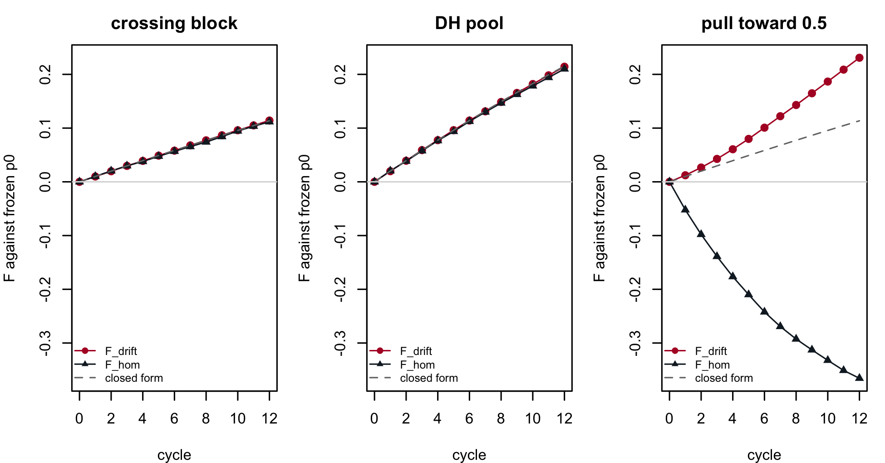

A diversity metric can only be judged against a population whose drift and inbreeding are known independently of the metric. The live examples of this chapter use two things from the Simulation part, the lines and hybrids of simulate_lines() and simulate_data() (Chapter 6), which are the candidate set of every selection in this chapter, and one frequency-level drift model, pool_traj() of Section 10.7.4, written here. The F4 panels of Chapter 7, the backcross populations of Chapter 8 and the AlphaSimR cycles of Chapter 9 are not measured in this chapter: they depart from assumptions A2 and A5 of Section 10.1, and A1-A8 are this chapter’s list, not a list the Simulation part uses (Chapter 7 and Chapter 8 map their departures onto it; Chapter 6 and Chapter 9 do not).
In classical theory, inbreeding measured as loss of heterozygosity and inbreeding measured as drift of allele frequencies are the same thing. Meuwissen et al. (2020) show that inside genomic optimal-contribution schemes they stop being the same thing, and can diverge badly, whenever diversity is controlled through identity by state (IBS) on a marker panel. Only when control is through identity by descent (IBD) is the classical equivalence restored.
The practical consequence is uncomfortable:
You hit exactly the target you wrote into the optimiser’s constraint, and you pay an unmonitored price in the metric you did not write.
If you constrain \(\tfrac{1}{2}\mathbf{c}'\mathbf{G}\mathbf{c}\) using a VanRaden \(\mathbf{G}\)(VanRaden 2008), you are constraining drift. The loss of heterozygosity in your germplasm may be running at a different rate, in either direction, from the one you believe you are controlling.
This chapter is written for one kind of programme, stated in full in Section 10.1: an allogamous, maize-type hybrid programme running reciprocal recurrent selection over two heterotic pools. The first half defines the metrics; the second half is the sequence of steps that puts them into a cycle report, with the check and the failure mode of each step.
10.1 The programme this chapter is written for
Every number in this chapter is computed under these assumptions. They are declared here because several of the results are false outside them. Chapter 1 describes the programme itself, stage by stage; this section states only what every number in this chapter assumes about it.
A1. The species is allogamous and the product is an F1 hybrid. Maize-type: two heterotic pools, A and B, crossed to produce single-cross hybrids. The commercial product carries the heterozygosity; the parents do not. Nothing here is addressed to a self-pollinated crop whose product is a line, and nothing here is addressed to a programme whose commercial unit is a synthetic or a population cross – both change which quantity is the product and therefore which loss matters.
A2. Parent lines are fully inbred, by doubled-haploid (DH) induction or by selfing to fixation. This is a property of the programme, not of the mating system: an allogamous crop bred for hybrids still delivers inbred parents. In this simulation the lines are homozygous at every locus, which the coancestry kernel reports exactly (Table 10.1):
Table 10.1: Assumption A2 on the teaching-scale lines and hybrids. het_fraction_lines: share of line genotype values equal to 0.5; self_coancestry_min: smallest diagonal element of the line coancestry matrix; het_fraction_F1: share of hybrid genotype values equal to 0.5; twice_GD_WI_hyb: 2 GD_WI_hyb over all N hybrids. The first two are asserted equal to 0 and 1 and the last two equal to each other. Dimensionless, six decimals.
het_fraction_lines
self_coancestry_min
het_fraction_F1
twice_GD_WI_hyb
0
1
0.36169
0.36169
Line heterozygosity is zero and every line’s self-coancestry is 1, so individual-level inbreeding coefficients are 1 by construction and carry no management information. The F1s carry 0.362 of their loci heterozygous, and that fraction is exactly twice GD_WI_hyb – the identity Section 5.5 derives (Equation 5.7). The manageable quantity is therefore an allele frequency in a pool, never a homozygosity within an individual. Every later section is computed on frequencies.
A3. Germplasm is recycled within pool; only information crosses the pool boundary. Lines are chosen on hybrid performance against the opposite pool and recycled inside their own pool, the loop Section 1.1 describes stage by stage. (Comstock et al. (1949) is the paper the book cites for the tester-based scheme; this chapter takes nothing from it beyond its existence and title, “A breeding procedure designed to make maximum use of both general and specific combining ability”, as Section 5.11 does.) A DH taken from an \(A \times B\) F1 would be a blend of both pools and would destroy the heterotic pattern, so it never happens. run_cycles() in Chapter 23 implements this loop in reduced form: recycling is driven by line usage in the selected hybrids, with no trials and no S3, and the index known without error (its assumptions C7 and C8 in Chapter 23, which Section 1.1 also states).
A4. Cycles are discrete. Pool sizes are constant across cycles and no generation overlap is modelled. Real programmes overlap cycles and reuse the same line for years, which makes a cycle index a poor clock for any \(\Delta F\) read off it. This book neither models nor measures that bias, and no later chapter treats it; it is a limit of every rate reported here, not a result.
A5. Markers are biallelic, coded \(0/0.5/1\) as the frequency of the reference allele within the individual. Whether they are neutral depends on which simulator produced them and on which row of a table reads them; the statement “markers are neutral” is not made without that qualification, and it is not true of this chapter’s own data in general. Three cases:
Frequency-level toys (pool_traj() of Section 10.7.4, the minor-allele-frequency (MAF) weight rule of Table 10.11): no trait exists, so nothing is selected on one. Neutral by construction.
Selections on ctx <- simulate_data(book_cfg): that simulator draws a marker effect on each of three traits at every marker (Chapter 6). The truncation, balanced (w = 1), capped and index-weighted selections select on an index of those traits, so the markers their metrics read are themselves under selection. The max-diversity plan (w = 0) never reads the index, but its metrics are still read on markers that carry trait effects.
run_cycles() of Chapter 23 does not use simulate_data(): it draws simulate_pools() with a finite number of quantitative trait loci (QTL; n_qtl = 300 by default).
A consequence stated as a limit of this chapter: wherever simulate_data() is the source, the marker panel and the set of causal loci are the same set. The gap between a marker panel and the causal loci it samples (the marker-versus-QTL gap) is not modelled and not measured here; the only treatment of it in this chapter is the report of the four panels of Meuwissen et al. (2020) (their Methods), none of which is reproduced.
Markers are in linkage equilibrium within pool in the founding draw, because each line’s genotype is drawn independently per locus (simulate_lines()); lines recycled under A3 share ancestors, and that independence no longer describes them. Linkage equilibrium makes the audit step of Section 10.7.5 a best case, and that is said again where the number is reported.
A6. The frequency base \(p_0\) is frozen at the founding cycle and never recomputed. This is ctx$p0, computed by build_ctx() at the founding cycle and stored. Section 10.7.1 is that step and measures what happens without it.
A7. No dominance enters any metric in this chapter.\(\theta\), gene diversity \(GD = 1 - \theta\) and \(\alpha\) are functions of allele frequencies alone. The dominance side of the same germplasm – what the divergence between pools is worth in heterosis – is Chapter 5, and the two must not be mixed inside one constraint.
A8. The scale is the book’s teaching scale: 25 + 25 lines, 2000 markers, 625 hybrids in the full factorial. Two other scales are named in this book and no chunk of this chapter runs either: the programme size the package declares as production (71 + 71 lines, 25000 markers; R/00_data.R), and the sim_config default that inst/scripts/ run (50 + 50 lines, 5000 markers), which several chapters also call the production scale. Where a result is scale-dependent, it says so.
10.2 Three lenses, not three synonyms
Table 10.2 sets out what each lens sees, the inbreeding coefficient that reads it and the relationship matrices built on it.
Table 10.2: The three lenses of the section title, plus the hybrid of two of them: G_ROH reads homozygosity and is interpreted as IBD, which is why it gets a row of its own and not a lens of its own. G_0.5 is attributed to Toro et al. (2014) by Meuwissen et al. (2020); the form 4f - 2J, an affine function of the matrix this book calls f (Chapter 2), is this book’s algebra, asserted in Table 10.31, not checked against Toro et al. (2014).
Lens
What the metric actually sees
Inbreeding metric
Relationship matrix
Drift
squared allele-frequency change relative to a base
F_drift
G_VR2, G_VR1, G_i(p)
Homozygosity
proportion of heterozygosity remaining
F_hom
G_0.5 (affine in molecular coancestry)
IBD
segments inherited by descent from a defined base
F_IBD
A, G_LA
Hybrid
haplotype homozygosity used as a proxy for IBD
F_ROH
G_ROH
WarningEvery inbreeding metric is a ratio to a reference population
Without explicitly declaring your base – cycle 0 of the recurrent programme? a landrace panel? the founding heterotic pool? – none of the numbers in this chapter mean anything. This is the commonest error in plant applications: using the current generation’s frequencies as the base, which zeroes the historical memory of erosion. Section 10.7.1 measures the size of that mistake: it is not an attenuation, it is an exact zero.
10.3 The metrics, one at a time
10.3.1 Rate of inbreeding and effective size
What you manage is not \(F\) but its rate of accumulation, Equation 10.1. \(F\) is a stock; \(\Delta F\) is a flow.
with \(F_t \in (-\infty, 1]\) the inbreeding coefficient of cycle \(t\) against the frozen base (negative values are possible for \(F_{hom}\), see Section 10.3.2), \(\Delta F\) the per-cycle rate and \(N_e\) the effective size it implies (Falconer and Mackay 1996, Ch. 3-4).
Since \(1 - F_t = (1 - \Delta F)^t\), a regression of \(\log(1 - F_t)\) on \(t\) has slope \(\log(1 - \Delta F)\), so \(\Delta F = 1 - e^{\text{slope}}\) and \(-\text{slope}\) is only its first-order approximation. The linearity of that regression is itself a diagnostic: in Meuwissen et al. (2020), \(\log(1 - F_{drift})\) was approximately linear under every scheme, while \(\log(1 - F_{hom})\) showed marked curvature under some, notably the one based on runs of homozygosity (ROH). Curvature means a non-constant rate – your \(N_e\) target is not being met steadily.
A tropical maize recurrent programme targeting \(N_e = 50\) per cycle needs \(\Delta F = 0.01\). Measuring \(F\) only at cycle 8 and dividing by 8 hides the possibility that cycles 1-3 were conservative and cycles 6-8 collapsed the base. Section 10.7.4 fits the regression on a case where the answer is known in advance, and then on one where the diagnostic has to fire.
10.3.2F_hom, homozygosity-based
The inbreeding coefficient \(F\)(Wright 1922) is, in its classical definition, the correlation between uniting gametes (the standard wording; it was not checked against Wright (1922), which this book has not read: UNVERIFIED). Under random drift in a closed population its consequence is \(H_t = H_0(1 - F_t)\), so \(F\) is the proportional loss of heterozygosity relative to the base (Falconer and Mackay 1996, Ch. 3). The homozygosity lens takes that consequence as its definition – the fraction of heterozygosity already lost relative to the base, Equation 10.2:
with \(p_{t,k} \in [0,1]\) the frequency of the reference allele at marker \(k\) in the population being scored, \(p_{0,k} \in (0,1)\) the same frequency in the frozen base, \(H = 2p(1-p)\) the expected heterozygosity under random mating, and \(m\) the number of markers (written \(N_{SNP}\) in Meuwissen et al. (2020), their Eq. 1A, where it is the total marker count; the book’s \(m\) is used throughout). This book restricts the sum to markers polymorphic in the base, because \(H_{0,k} = 0\) makes the ratio undefined otherwise – freq_metrics() does that with keep <- ctx$p0 > eps & ctx$p0 < 1 - eps, so \(m\) then counts the markers kept – and the restriction changes nothing against their result, since their own panels were random samples of loci already segregating in the base population.
It can be negative. If management pushes frequencies toward 0.5, heterozygosity rises above the base and the “inbreeding coefficient” goes below zero. That is not a numerical error: it is the expected behaviour of any scheme that maximises heterozygosity on the monitored panel.
It protects against inbreeding depression and the expression of deleterious recessives in homozygosis. It is the right lens when the dominant risk is vigour – in this programme, the vigour of the segregating crossing block and not of the fixed lines, which is a narrower claim than it looks and is qualified at the end of this section.
10.3.2.1 What this lens is computed on, and what it is not
\(F_{hom}\) as freq_metrics() computes it takes \(p_t\) from colMeans(X[idx, ]): the reference-allele frequency of the merged hybrid set. With inbred parents that merged frequency is \(\bar p = (\tilde p_A + \tilde p_B)/2\), with \(\tilde p_A\) and \(\tilde p_B\) the two pools’ frequencies weighted by the line usage the selection induces. So the \(He\) column of the same call is \(\overline{2\bar p(1 - \bar p)}\), which is \(GD_T = 1 - \bar f\) of the Caballero & Toro partition (Caballero and Toro 2002) (Chapter 3, Equation 3.9) identically, not approximately: \(\bar f = (\theta_A + 2\theta_{AB} +
\theta_B)/4 = \overline{\bar p^2 + (1 - \bar p)^2}\) under A2.
That is gene diversity of the notional merged pool, and it is not the heterozygosity of the product. The realised F1 heterozygosity is \(2\,GD_{WI\text{-}hyb}\) – exactly, by the self-coancestry identity of assumption A2 – and on the full factorial it equals \(GD_T + GD_{BS}\), the between-pool component counted twice (Equation 5.7 of Section 5.5, which also states its limit on selected subsets). The difference between the two quantities is therefore \(GD_{BS}\), which the \(F_{hom}\) lens does not carry, and which moves with the selection (Table 10.3 for the merged-pool quantities, Table 10.4 for the hybrid-level ones):
Table 10.3: Merged-pool level of diversity for four 60-hybrid selections from the teaching-scale candidate set (Section 10.1, A8): one random draw (seed 31), the max-diversity greedy (w = 0), the index-weighted greedy (w = 1) and truncation on the index. He_merged and F_hom: freq_metrics() on the merged hybrid frequencies against the frozen base; GD_T and GD_BS: gd_partition(). All dimensionless.
Table 10.4: Hybrid level of diversity for the four selections of Table 10.3. F1_het: fraction of heterozygous loci in the selected hybrids; two_GD_WI_hyb: twice the hybrid-level within-individual gene diversity (gd_partition()); GD_T_plus_BS: GD_T + GD_BS of Table 10.3. All dimensionless.
F1_het
two_GD_WI_hyb
GD_T_plus_BS
random
0.3607
0.3607
0.3612
max_div
0.3707
0.3707
0.3664
balanced
0.3646
0.3646
0.3648
truncation
0.3646
0.3646
0.3648
The ranking of Table 10.3 is read against a resampled null (Table 10.5), not against the single random row, for the reason Section 10.7.2 makes explicit. The null is the package’s null_distribution() (Section 11.9; Section 11.10 reads every metric against it, a chapter that comes after this one and is used here before it is reached): random 60-hybrid subsets, the same object Section 10.7.2 reuses. Realised F1 heterozygosity is \(2\,GD_{WI\text{-}hyb}\), asserted in Table 10.1, so its null is read off the GD_WI_hyb column:
Table 10.5: Random-subset null for the selections of Table 10.3: mean and standard deviation of F_hom, GD_BS and realised F1 heterozygosity (twice GD_WI_hyb) over B_full = 1000 random 60-hybrid subsets (null_distribution(), seed 7), then each selection’s z-score against that null, in null standard deviations.
F_hom
GD_BS
F1_het
null_mean
0.0069
0.0359
0.3617
null_sd
0.0038
0.0006
0.0011
random
1.2037
-0.5979
-0.8820
max_div
-4.7932
0.4738
7.8462
balanced
9.4079
27.4254
2.5147
truncation
9.4079
27.4254
2.5147
Two identities hold to machine precision in Table 10.3 and Table 10.4, and the stopifnot() enforces both on every render: \(He = GD_T\), and the realised F1 heterozygosity equals \(2\,GD_{WI\text{-}hyb}\). The third comparison is not an identity on a selected subset: \(GD_T + GD_{BS}\) departs from the realised heterozygosity by at most 0.0043 across these four rows, because \(GD_T\) and \(GD_{BS}\) are computed from line-usage weights – what a random re-pairing of the selected parents would give – while \(GD_{WI\text{-}hyb}\) scores the pairs actually chosen (Chapter 5 states the same limit from the other side).
Now read the ranking. The table has three distinct plans, not four: balanced (w = 1) returns exactly the truncation set, as Section 10.7.2 shows, so the two rows are identical in every column of both tables. On this candidate set (data seed 1) truncation has the highest\(F_{hom}\) of the three, 0.0426, which is 9.4 null s.d. above the resampled mean of 0.0069 and on the usual reading is “most heterozygosity lost”. Its realised F1 heterozygosity is 0.3646 against a null mean of 0.3617, z = 2.51, reached or exceeded by 0.3% of the 1000 resampled subsets. That is one founder draw, and the unit of replication of this simulation is the founder draw, so the sign of that z is tested on twenty of them in Table 10.6 before anything is inferred from it.
Table 10.6: Twenty founder draws (data seeds 1 to 20; simulate_data() with the book configuration and seed replaced) for the three z-scores that carry the argument of this section: realised F1 heterozygosity of the truncation selection (z_trunc_F1het), realised F1 heterozygosity of the max-diversity greedy (z_maxdiv_F1het) and F_hom of the truncation selection (z_trunc_Fhom). Each z is against its own random-subset null of 60 hybrids (null_distribution(), B_full = 300, seed 7), in null standard deviations. Rows: smallest, median and largest z over the 20 draws, then the number of draws with z < 0, z > 2 and z < -2. The null here has 300 subsets per draw, against the 1000 of Table 10.5.
z_trunc_F1het
z_maxdiv_F1het
z_trunc_Fhom
min
-4.47
5.84
3.69
median
0.52
6.88
8.44
max
3.90
8.67
12.86
n_below_0
7.00
0.00
0.00
n_above_2
4.00
20.00
20.00
n_below_minus2
2.00
0.00
0.00
Result. Over the twenty draws the z of the truncation selection’s realised F1 heterozygosity ranges from -4.47 to 3.9; it is negative in 7 of 20, above 2 in 4 and below \(-2\) in 2. Data seed 1, the draw used everywhere else in this chapter, is one of the positive ones. The \(F_{hom}\) z of truncation is above 0 on 20 of 20 draws (smallest 3.7), and the z of the max-diversity plan’s realised F1 heterozygosity is above 0 on 20 of 20 (smallest 5.8).
Interpretation. The measurements support two statements and no third. (i) \(F_{hom}\) and realised F1 heterozygosity are different quantities and can disagree strongly: on data seed 1 the max-diversity plan has \(F_{hom}\) at z = -4.8 and F1 heterozygosity at z = 7.8, and truncation has a high \(F_{hom}\) z on every draw while its F1 heterozygosity z changes sign across draws. (ii) Whether truncation on the index leaves the hybrids more or less heterozygous than random subsets has no consistent sign at this scale: it depends on the founder draw, split as the counts of Table 10.6 show. The statement that truncation hybrids are more heterozygous than random ones, and the mechanism that would explain it (the \(A \times B\) pairs kept being more heterozygous than random pairs), are therefore not claimed. The random row, a single subset, sits at z = -0.88 on the same column and is no control either. What limits these inferences is the number of draws (20), the scale (25 + 25 lines, 2000 markers) and the single subset size of 60; none was varied. \(GD_{BS}\) is not evidence on the pairs actually kept: it is computed from line-usage weights, not from the pairs (Section 10.3.2). On data seed 1 it ranks truncation and the max-diversity plan in the opposite order to F1 heterozygosity – truncation \(GD_{BS}\) at z = 27.4 against F1 heterozygosity at z = 2.51, the max-diversity plan \(GD_{BS}\) at z = 0.47 against z = 7.85 – and the rise of \(GD_{BS}\) under truncation is the usage-concentration effect Section 10.7.6 derives, measured there on this one draw only.
Within a heterotic pool under reciprocal recurrent selection, \(F_{hom}\) on the pool’s own frequencies is still the right lens for one thing, and that one thing is narrower than it is usually stated to be. It is the segregating crossing block, which is not inbred and in which inbreeding depression is therefore expressed: \(ID = 2F\sum_k d_k p_k q_k\)(Falconer and Mackay 1996, Ch. 14), with \(d_k\) the dominance effect at locus \(k\), \(p_k\) and \(q_k = 1 - p_k\) the pool’s current frequencies, and \(F \in [0,1]\) the block’s inbreeding coefficient relative to random mating at those same current frequencies – which is not the \(F_t\) of this chapter’s two lenses, measured against the frozen base \(p_0\), and the two must not be substituted for one another. Section 5.6 verifies that quantity against heterosis_partition()’s shared term. It is built from the same per-locus product \(p_k q_k\) that \(F_{hom}\) aggregates – but weighted by \(d_k\), which \(F_{hom}\) does not carry, so \(F_{hom}\) locates the erosion and does not price it.
It does not anticipate the per-se value of the inbred lines themselves. Under A2 a line has no heterozygous locus, so its dominance contribution is exactly zero whatever the pool’s frequencies are – Section 5.6 measures that exact zero – and a fully homozygous genotype’s value is therefore the additive sum \(\sum_k a_k (2x_{ik} - 1)\) alone, the genotypic-value model of Chapter 5 with \(x_{ik} \in \{0, 1\}\) at every locus and \(a_k\) the per-locus additive effect. Its pool mean moves with the frequencies in whichever direction they move, so there is no directional decline there for \(F_{hom}\) to anticipate. It also says nothing about between-pool divergence (Chapter 5). Computed instead on the homozygosity of individual inbred parents it is 1 by construction – assumption A2 – and is useless for management. The mating system of the species does not rescue that: an inbred maize line is as fixed as an inbred wheat line. What distinguishes the hybrid programme is that the pool of lines can be intermated, so the pool has a frequency vector worth managing even though none of its members does.
Never negative. It has the algebraic form of the standardised-variance definition of \(F_{ST}\) – a variance of allele frequencies divided by \(p_0(1-p_0)\) – which is how Meuwissen et al. (2020) relate it (“similar to the definition of \(F_{ST}\)”, their text after Eq. 1B, citing Holsinger and Weir (2009), who separate that definition from the several other quantities carrying the same name). The priority of that form is not claimed here, and no paper of Wright’s is cited for it. \(F_{drift}\) differs from it in what is partitioned, not in the form: here the variance is of one population’s frequencies through time around the frozen base \(p_0\), in the other it is of a set of populations in space around their mean. The \(F_{ST}\) column of this chapter is the spatial one; it is defined once, and distinguished from \(F_{BN}\) and from Fst_Wright, in Section 10.7.6 (Table 10.30). \(F_{drift}\) is exactly the quantity constrained when G_VR2 goes into the optimiser.
It protects against random change in phenotypic value for traits outside the selection objective, against rare deleterious recessives rising to dangerous frequencies, and against irreversible loss of rare alleles.
It must not be read as a measure of this programme’s selection intensity, even though Meuwissen et al. (2020) offer exactly that reading for a locus under directional selection. They call \(\delta p^2/[p_0(1-p_0)]\) “an approximation to the squared total intensity (\(i^2\)) applied to the marker” (citing Liu and Woolliams (2010) for the underlying non-linearity), and where the only thing moving frequencies is truncation selection on a trait, that reading is theirs to make. But \(F_{drift}\) is accumulated over every source of displacement a scheme has – selection, pure drift, and a diversity constraint that pushes frequencies on its own – and the three are not separable from the statistic alone. Section 10.7.4 runs a crossing block with no selection of any kind and \(F_{drift}\) climbs across the cycles to a value the step reports, which under an unconditional intensity reading would be a large intensity applied by nothing; Section 10.7.2’s max_div plan moves \(F_{drift}\) by minimising coancestry, not by selecting on any trait. Even where selection is the only driver, the displacement is not a function of frequency alone: it depends on the average effect of a gene substitution at that locus, \(a + d\,(q - p)\)(Falconer and Mackay 1996, Ch. 7) – classically written \(\alpha\), which in this book is the diversity-loss statistic instead (Chapter 5 says the same) – and on the phenotypic standard deviation of the trait under selection, neither of which appears anywhere in \(F_{drift}\). So an intensity read off F_drift alone, with no independent knowledge of what moved it, cannot be trusted, and this chapter does not attempt one. What constraining F_drift does constrain is the squared displacement of the genome from its base, whatever moved it.
A programme running six cycles of genomic selection with a VanRaden \(\mathbf{G}\) and reporting \(\Delta F \approx 1\%\) has reported \(\Delta F_{drift}\) on the training panel. Quantitative disease-resistance loci not yet prioritised may have hitch-hiked to extreme frequencies alongside yield QTL, and none of that appears in the reported metric.
10.4 The classical equivalence, and the covariance that destroys it
Under purely random drift, with \(E[\delta p_t \mid p_0] = 0\) for every \(p_0\),
(Meuwissen et al. 2020, their Eq. 3), where \(\delta p_{t,k} = p_{t,k} - p_{0,k}\) and the covariance is taken over markers with divisor \(m\) – which is why freq_metrics() computes it as 2 * mean(x * y) and not with cov(). The two differ for two independent reasons: stats::cov() divides by \(m - 1\), and \(\overline{xy} = \mathrm{cov}_{N}(x, y) + \bar x\,\bar y\), so the product term vanishes only if one of the two means is zero – either will do, and neither is zero here.
In words: if the direction of frequency change is correlated with the starting frequency, the two measures diverge. The non-obvious part is that this covariance is induced by the diversity management itself, not by directional selection – Meuwissen et al. (2020) demonstrate this by running the scheme with random genomic estimated breeding values (GEBVs), and the divergence persists.
Table 10.7: F_hom, F_drift and cov_diag of one random 60-hybrid selection (seed 31) against the frozen base, from a single freq_metrics() call. Dimensionless.
F_hom
F_drift
cov_diag
0.011458
0.005192
0.006267
Show code
stopifnot(isTRUE(all.equal(fm[["cov_diag"]], fm[["F_hom"]] - fm[["F_drift"]])))# The two standardised marker vectors of @eq-era-cov, on the markers polymorphic in# the base, so `2 * mean(x * y)` can be put next to `2 * cov(x, y)`.keep <- ctx$p0 >1e-6& ctx$p0 <1-1e-6sdv <-sqrt(ctx$p0[keep] * (1- ctx$p0[keep]))x <- (colMeans(ctx$X[idx, keep, drop =FALSE]) - ctx$p0[keep]) / sdvy <- (ctx$p0[keep] -0.5) / sdvstopifnot(isTRUE(all.equal(2*mean(x * y), unname(fm[["cov_diag"]]))))data.frame(value =formatC(c(F_hom_minus_F_drift =unname(fm[["F_hom"]] - fm[["F_drift"]]),cov_diag =unname(fm[["cov_diag"]]),residual =unname(fm[["cov_diag"]] - (fm[["F_hom"]] - fm[["F_drift"]])),mean_x =mean(x),mean_y =mean(y),two_times_R_cov =2* stats::cov(x, y)), digits =6, format ="g"))
Table 10.8: The identity of Equation 10.4 on the selection of Table 10.7, over the markers polymorphic in the base. F_hom_minus_F_drift and cov_diag: the two sides; residual: their difference; mean_x, mean_y: marker-wise means of the two standardised vectors of Equation 10.4; two_times_R_cov: 2 * cov(x, y) with the n - 1 divisor of stats::cov(). Dimensionless, six significant digits.
value
F_hom_minus_F_drift
0.0062665
cov_diag
0.0062665
residual
8.67362e-18
mean_x
-0.000772559
mean_y
-0.0100505
two_times_R_cov
0.00625421
Exact to machine precision, and the two stopifnot()s mean this page cannot render if it stops being. The last three rows of Table 10.8 are the point of the previous paragraph: neither marker-wise mean is zero, so 2 * cov(x, y) returns 0.006254 where the quantity Equation 10.4 defines is 0.006267. And when the selection is the base, both lenses must read zero (Table 10.9):
Table 10.9: F_hom, F_drift and cov_diag of the selection made of all N hybrids, which is the candidate set that defines the frozen base p0. All three are asserted below 1e-12 in absolute value; the table prints twelve decimals, so a value of order 1e-17 shows as 0. Dimensionless.
F_hom
F_drift
cov_diag
0
0
0
10.4.2 Why each matrix generates a sign
Table 10.10 gives the sign of the covariance in Equation 10.4 that each relationship matrix generates when it is the constraint, and the mechanism.
Table 10.10: The sign of the bias is a property of the matrix, not of the data: sign of the covariance of Equation 10.4 generated by each matrix used as the optimiser’s constraint. Mechanisms as set out by Meuwissen et al. (2020), their Discussion and Supplementary Information 1; the di/dp expression in the last row is theirs, after Liu and Woolliams (2010).
Matrix
Covariance
Mechanism
G_VR2
positive
the constraint penalises delta-p^2, so moving an allele to the far extreme costs more than to the near one; the optimiser pushes rare alleles to 0 and common ones to 1
G_0.5
negative
frequencies are measured as deviations from 0.5, so the optimiser buys ‘diversity’ by pushing everything to intermediate frequencies
G_VR1
positive, attenuated
G_VR2 reweighted by 2p0(1-p0), giving more weight to already-intermediate loci and less room at the extremes
G_i(p)
negative
uses accumulated intensity instead of delta-p^2; since di/dp = [p(1-p)]^-1/2, moves toward the extremes get more expensive
WarningYour minor-allele-frequency (MAF) spectrum decides how bad this is
Meuwissen et al. (2020) state this as an expectation rather than as a measured comparison: “the covariance generated is expected to be larger for WGS [whole-genome sequence] data where allele frequencies are extreme with typical MAF close to 0, than for SNP [single-nucleotide polymorphism] (chip) panels where allele frequencies are generally closer to 1/2” (their second Conclusion bullet), having observed that the strength of the covariance “depends on the distribution of \((p_0 - \tfrac12)\)” (their Discussion). Their own simulation used four panels, all random samples of the same WGS data (a SNP panel for best linear unbiased prediction (SNP-BLUP), a neutral panel, a QTL panel and a second management panel) – none a SNP chip – so the comparison across a WGS panel and a chip panel is an inference from the algebra of Equation 10.4 and not a result of their experiment either.
The algebra can be made a number, which is worth doing because it decides whether G_VR2 is usable. Apply one deterministic management rule – move every frequency 5% of the way toward 0.5, the caricature of a heterozygosity-maximising constraint used again in Section 10.7.4 – to a sequence-like panel whose folded site-frequency spectrum has density proportional to \(1/[p(1-p)]\), and then to MAF-filtered subsets of the same draw (Table 10.11):
Show code
set.seed(21)# Folded site-frequency spectrum with density proportional to 1/[p(1-p)] on# [1e-3, 1 - 1e-3]: the logit of p is uniform. One draw, filtered four ways.p_seq <-plogis(runif(2e5, qlogis(1e-3), qlogis(1-1e-3)))maf_row <-function(floor, pull =0.05) { p0 <- p_seq[pmin(p_seq, 1- p_seq) >= floor] p1 <- p0 + pull * (0.5- p0) # the rule, applied exactly s2 <- p0 * (1- p0)c(maf_floor = floor, markers =length(p0),kappa =mean((p0 -0.5)^2/ s2), # the panel's own weightF_hom =1-mean(p1 * (1- p1) / s2),F_drift =mean((p1 - p0)^2/ s2),cov_diag =2*mean((p0 -0.5) * (p1 - p0) / s2))}mafw <-as.data.frame(t(sapply(c(0.001, 0.01, 0.05, 0.20), maf_row)))# Under this rule all three lenses are multiples of one panel statistic, kappa.stopifnot(isTRUE(all.equal(mafw$F_drift, 0.05^2* mafw$kappa)),isTRUE(all.equal(mafw$cov_diag, -2*0.05* mafw$kappa)))keep0 <- ctx$p0 >1e-6& ctx$p0 <1-1e-6# as freq_metrics() drops themkappa_book <-mean((ctx$p0[keep0] -0.5)^2/ (ctx$p0[keep0] * (1- ctx$p0[keep0])))# kappa of the ancestral U(0.05, 0.95) draw of simulate_lines(), by quadrature.kappa_anc <- stats::integrate(function(p) (p -0.5)^2/ (p * (1- p)) /0.9,0.05, 0.95)$valuefmt(mafw, 4)
Table 10.11: One deterministic management rule, every frequency moved 5% of the way toward 0.5, applied to a simulated sequence-like panel (200000 sites, folded spectrum with density proportional to 1/[p(1-p)] on [0.001, 0.999], seed 21) and to MAF-filtered subsets of the same draw. maf_floor: smallest minor-allele frequency kept; markers: sites retained; kappa: the panel statistic, mean of (p0 - 0.5)^2/[p0(1-p0)]; F_hom, F_drift, cov_diag: the three lenses after one application of the rule. Dimensionless.
maf_floor
markers
kappa
F_hom
F_drift
cov_diag
0.001
200000
35.7687
-3.4874
0.0894
-3.5769
0.010
132755
4.8542
-0.4733
0.0121
-0.4854
0.050
85382
1.1056
-0.1078
0.0028
-0.1106
0.200
40109
0.1761
-0.0172
0.0004
-0.0176
Under a rule of this form \(\delta p = c\,(0.5 - p_0)\) the algebra is exact: \(F_{drift} = c^2 \kappa\) and cov_diag\(= -2c\kappa\) with \(\kappa = \overline{(p_0 - 0.5)^2 / [p_0(1-p_0)]}\), the panel statistic the stopifnot() of Table 10.11 verifies. Everything about the panel enters through \(\kappa\), and \(\kappa\) is 32.4 times larger at a MAF floor of 0.001 than at 0.05 on the same draw: cov_diag moves from -3.577 to -0.111 for the same 5% pull. For reference, this book’s own hybrid panel has \(\kappa =\) 1.27 over the 1934 markers polymorphic in the base, which sits at the chip-like end of that table – the ancestral \(U(0.05, 0.95)\) draw of simulate_lines() alone gives \(\kappa =\) 0.64, about half of it, and the rest comes from the Balding-Nichols divergence at \(F_{BN}\) = 0.15 and the finite sample of lines per pool (not decomposed further here); none of it is biological.
Translated to plants, as a stated expectation and not as a measurement on real germplasm: genotyping-by-sequencing (GBS) or skim-seq retaining the full spectrum puts a programme at the high-\(\kappa\) end; a 20-50k chip filtered to MAF > 0.05 puts it at the low-\(\kappa\) end. The rule of Table 10.11 is a caricature, not an optimiser, so the ratio between panels is the transferable part and the absolute values are not.
10.5 The other matrices, briefly
F_IBD via G_LA. Instead of assuming a 50/50 transmission probability for each parental allele (as the pedigree matrix \(\mathbf{A}\) does), linkage analysis over the markers infers which parental haplotype was actually transmitted along the chromosome. It requires pedigree and markers. It measures IBD relative to a base explicitly defined as unrelated and non-inbred, so frequency change is determined by the base population rather than by linkage disequilibrium generated during selection – and the problematic covariance disappears. It was the only scheme tested that met both the \(\Delta F_{hom}\) and \(\Delta F_{drift}\) targets, on the managed panel and at unmonitored neutral loci. On gain it was not the highest in absolute terms; what Meuwissen et al. (2020) report is that at the same averaged inbreeding – interpolating each scheme’s gain to the mean of \(F_{hom}\) and \(F_{drift}\) – G_LA beat \(\mathbf{A}\) in 65 of 100 replicates and G_ROH in 62 of 100 (their Genetic Gain section).
For a hybrid programme this is the point of greatest friction, and also the one where the news is best. In biparental populations and backcross families G_LA is natural and cheap – phase is known and the number of meioses since the base is small. In a maize recurrent-selection population with a complete recycling pedigree – which a programme that records the F1 parents of every DH line has – it is feasible. In a germplasm panel without pedigree it is inapplicable, and the honest alternative is segment-based IBD.
F_ROH. A run of homozygosity is an uninterrupted stretch of homozygous markers; the logic is that many consecutive markers are unlikely to be IBS by chance, so the stretch is probably IBD. The fundamental ambiguity is that F_ROH is IBD when runs are long (recent inbreeding) and homozygosity when they are short (ancient inbreeding, accumulated IBS). The minimum-length threshold is therefore a knob that selects the age of inbreeding you are measuring, and there is no well-defined reference base.
Empirically, G_ROH behaved more like G_0.5 than like an IBD measure. It also is not guaranteed positive semi-definite – its elements are computed pairwise – and required substantial diagonal additions for inversion, which made it diagonally dominant and artificially inflated the number of parents selected.
In an inbred parent line the entire genome is one ROH and \(F_{ROH} \approx 1\): the metric saturates for exactly the reason assumption A2 makes every individual-level coefficient useless. Applied instead to the hybrids, or to the segregating crossing block from which DH lines are induced, it is useful for diagnosing erosion of an elite pool. For management inside an optimiser, check positive definiteness carefully – Section 10.7.7 shows the check.
10.5.1 Side by side
Table 10.12 summarises how each of the seven matrices behaved in the optimiser of Meuwissen et al. (2020).
Table 10.12: Seven matrices in the same optimiser (Meuwissen et al. 2020, their Tables 2 and 3, Figure 5 and Discussion). The Behaviour column is qualitative and no number from either panel is transcribed in this table; where a rate is invoked (Table 10.13), it is always the unmonitored neutral panel N. The one exception is G_VR2’s ‘only on the managed panel’, a paraphrase of their Discussion that reports a Panel M outcome without a Panel M number appearing anywhere in this chapter. Class is the lens the matrix is computed from, which is why G_ROH sits with homozygosity – the Hybrid row of Table 10.2 is the same matrix labelled by its intended interpretation.
Matrix
Class
Behaviour in the optimiser
A
IBD (expectation)
high gain, but exceeded both rate targets, the drift one by more, by not accounting for within-family linkage disequilibrium
G_VR2
drift
meets the drift target only on the managed panel; F_hom runs away
G_VR1
drift
reweighted version; smaller bias, smaller gain
G_0.5
homozygosity
misses the drift target by the widest margin of the nine schemes they ran; loses genetic variance early
G_i(p)
drift
inverts the sign of the bias; constraint only indirectly tied to F
G_LA
IBD
the only one meeting both targets; highest gain at equal averaged inbreeding
G_ROH
homozygosity, read as IBD
high gain, uncontrolled drift, numerical problems
10.6 Reference results
Target \(\Delta F = 0.005\) per generation (\(N_e = 100\)). Values at the unmonitored neutral loci (their Panel N), generation 20, as reported by Meuwissen et al. (2020). Table 10.13 transcribes four columns and derives one:
dF_hom, dF_drift and gap are the three Panel N columns of their Table 2. gap is the level\(F_{hom} - F_{drift}\) reached in generation 20, not a rate and not a difference of the two rate columns; it is cov_diag of Equation 10.4 accumulated over the 20 generations. Their reported standard errors are \(< 2.5 \times 10^{-5}\) on the rates and \(< 2.2 \times 10^{-4}\) on gap.
gain is their Table 3: cumulative genetic gain after 20 generations, expressed in units of the initial genetic standard deviation, standard errors \(\le 0.004\).
gain_per_dF is computed here, not transcribed, and is not the device Meuwissen et al. (2020) use: their own interpolation (Genetic Gain section, their Figure 5) compares gains at a common generation-20 level of averaged inbreeding, \((F_{hom} + F_{drift})/2\) from their Table 3 – a stock – not at a common mean of the two rate columns used here. gain_per_dF is offered only as a same-chapter summary of Table 10.13, and reading 1 of this list states explicitly which ordering it does and does not support.
Table 10.13: Eight schemes of Meuwissen et al. (2020) at the unmonitored neutral loci (Panel N), generation 20. dF_hom and dF_drift: rates of inbreeding per generation on the two lenses; gap: level of F_hom - F_drift reached in generation 20; gain: cumulative genetic gain after 20 generations, in initial genetic standard deviations (their Tables 2 and 3). gain_per_dF: gain divided by the mean of the two rate columns, derived in this chunk. Both rate targets are 0.005 per generation; only G_LA meets both.
Scheme
Class
dF_hom
dF_drift
gap
gain
gain_per_dF
G_VR2(M,M)
drift
0.0103
0.0068
0.054
7.124
833
G_VR2(M,D)
drift
0.0101
0.0068
0.050
7.107
841
G_VR1(M,M)
drift
0.0080
0.0069
0.021
6.680
897
G_i(p)(M,M)
drift
0.0065
0.0077
-0.031
7.111
1002
G_0.5(M,M)
homozygosity
0.0073
0.0176
-0.170
6.734
541
G_ROH(M,M)
homozygosity
0.0054
0.0088
-0.070
9.099
1282
G_LA(M,M)
IBD
0.0043
0.0049
-0.010
7.188
1563
A(M,~)
IBD
0.0070
0.0084
-0.021
9.890
1284
Four readings:
No IBS scheme met both targets; the IBD scheme G_LA met both, the targets being ceilings (Meuwissen et al. 2020, Conclusion). On Panel N its dF_drift is 2% under 0.005 (their Table 2 gives the same 0.0049 for Panel M, not transcribed here, and their text states “within 2% of the target for both Panels M and N”) and its dF_hom 14% under it (0.0043 against 0.005). It also has the largest gain_per_dF, 1563 against 1284 for \(\mathbf{A}\) and 1282 for G_ROH – but that ordering is not robust to the denominator: against dF_hom alone G_ROH is marginally ahead (1685 against 1672). The claim that survives is the replicate-level one in reading 4, not a ratio of table means.
Pedigree \(\mathbf{A}\) gave the highest absolute gain but overshot the 0.005 target by 40% on dF_hom and by 68% on dF_drift (Panel N; their Results text says 40% for both panels, while their Table 2, Panel N, gives the two percentages of this item, which are not both 40%) – neutral loci hitch-hiking with QTL through within-family linkage disequilibrium, which the pedigree expectation of IBD cannot capture.
Using a separate panel for management instead of the GEBV panel changed gain by 0.24% (G_VR2(M,D) against G_VR2(M,M)). Not worth the complexity as a gain measure; it is still worth it as an audit measure, which is a different use and is the subject of Section 10.7.5.
At equal mean inbreeding, G_LA beat \(\mathbf{A}\) in 65 of 100 replicates and G_ROH in 62 of 100.
Those are animal-breeding numbers under the assumptions of Section 10.9, and none of them is reproduced here. What follows is.
10.7 The monitoring protocol
Seven steps, in the order a cycle report is assembled. Each one names the function to call, the quantity to check, and what a failure looks like.
10.7.1 Step 1 – Freeze \(p_0\) at the founding cycle
Both lenses are ratios to a base, so the base is the first thing a cycle report has to pin down. In this book it is ctx$p0, the allele frequencies of the candidate set, computed in build_ctx() at cycle 0 and overwritten, with ctx$maf_pop, by the stored cycle-0 values at every later cycle (run_cycles() does this in cycle_ctx(); see the Call of this step).
At the hybrid level the base is not a free choice: on the full factorial it is the average of the two pool bases, exactly (Table 10.14).
Show code
stopifnot(isTRUE(all.equal(ctx$p0, as.vector((P0["A", ] + P0["B", ]) /2))))# Unequal pool sizes, still a complete factorial: each pool-A line appears in# n_pool_B hybrids and each pool-B line in n_pool_A, so the internal weight# stays uniform within each pool and the identity is untouched.cfg_u <- utils::modifyList(book_cfg, list(n_pool_A =10, n_pool_B =40))ctx_u <-simulate_data(cfg_u)Pu <-pool_freqs(simulate_lines(cfg_u) /2,rep(c("A", "B"), c(cfg_u$n_pool_A, cfg_u$n_pool_B)))# A balanced INCOMPLETE factorial -- not the full n_A*n_B hybrids, but each# line still used equally often within its own pool (a cyclic 1-to-3 design,# the shape of a real NCII): the identity does not need completeness.k <-3idx_bal <-unlist(lapply(seq_len(book_cfg$n_pool_A), function(a) { bpart <- ((a -1+0:(k -1)) %% book_cfg$n_pool_B) +1which(ctx$ped$a == a & ctx$ped$b %in% (bpart + book_cfg$n_pool_A))}))p_bal <-colMeans(ctx$X[idx_bal, , drop =FALSE])# "every line used exactly k times": the balance the identity needsstopifnot(all(table(c(ctx$ped$a[idx_bal], ctx$ped$b[idx_bal])) == k))# An UNbalanced candidate set with concentrated line usage: it is not.p_sub <-colMeans(ctx$X[sel_truncation(ctx, 60), , drop =FALSE])stopifnot(isTRUE(all.equal(ctx_u$p0, as.vector((Pu["A", ] + Pu["B", ]) /2))),isTRUE(all.equal(p_bal, as.vector((P0["A", ] + P0["B", ]) /2))))data.frame(max_abs_deviation =formatC(c(complete_balanced =max(abs(ctx$p0 - (P0["A", ] + P0["B", ]) /2)),complete_unequal_pools =max(abs(ctx_u$p0 - (Pu["A", ] + Pu["B", ]) /2)),incomplete_balanced =max(abs(p_bal - (P0["A", ] + P0["B", ]) /2)),truncation_subset =max(abs(p_sub - (P0["A", ] + P0["B", ]) /2))), digits =3, format ="g"))
Table 10.14: Largest marker-wise absolute difference between the hybrid-level base (column means of the hybrid set) and the average of the two pool bases (p_A + p_B)/2, in allele-frequency units, for four hybrid sets: the full factorial of the teaching scale (A8), a complete factorial with unequal pool sizes, a balanced incomplete factorial with every line in the same number of hybrids (sizes in the text of Section 10.7.1) and the 60-hybrid truncation selection. The first three are asserted equal to zero to numerical tolerance.
max_abs_deviation
complete_balanced
1.11e-16
complete_unequal_pools
1.11e-16
incomplete_balanced
1.11e-16
truncation_subset
0.313
Each pool-A line appears in 25 hybrids and each pool-B line in 25, so a column mean over the factorial is \((p_A + p_B)/2\) with no weighting left over. Two consequences a breeder should read off this identity. First, freezing \(p_0\) at the hybrid level freezes both pool bases jointly, so the hybrid-level lenses cannot attribute erosion to one pool – that is Section 10.7.6’s job. Second – and this is the part that is easy to state wrongly – what the identity requires is uniform line usage within each pool, not completeness of the factorial as such. With 10 lines in one pool against 40 in the other, still complete, the identity holds to \(1.1 \times 10^{-16}\). It holds just as exactly (\(1.1 \times 10^{-16}\)) on a balanced but incomplete factorial – 75 of the 625 possible hybrids, each line used exactly 3 times, the shape of a real North Carolina Design II (NCII) – because each pool’s lines are still used equally often within that pool. What re-weights the two pools inside the base is unequal line usage, which a balanced partial factorial does not have and a selected subset typically does: the column means of the 60-hybrid truncation set depart from \((p_A + p_B)/2\) by up to 0.313 on a single marker, because truncation concentrates hybrids on a few high-value lines in each pool. A base computed on a set with unequal line usage is therefore a different base – which is the failure mode of the truncation_subset row of Table 10.14, and not a property of the design being a factorial or not.
Now the failure mode. build_ctx() recomputes p0 <- colMeans(X) on every call, so rebuilding the context from the selected hybrids each cycle – which is what re-running a G-construction function per cycle amounts to – re-anchors the base on the population you were about to measure (Table 10.15):
Show code
i_md <-sel_greedy(ctx, 60, w =0)Xs <- ctx$X[i_md, , drop =FALSE]rebase <-build_ctx(X = Xs, f =molecular_coancestry(Xs), G =NULL,traits = ctx$traits[i_md, , drop =FALSE],ped = ctx$ped[i_md, ], n_lines = ctx$n_lines,pool = ctx$pool, fL = ctx$fL, cfg =NULL)rb <-rbind(frozen_base =freq_metrics(i_md, ctx)[c("F_hom", "F_drift", "cov_diag")],rebased =freq_metrics(seq_along(i_md), rebase)[c("F_hom", "F_drift", "cov_diag")])stopifnot(all(abs(rb["rebased", ]) <1e-12))fmt(rb, 6)
Table 10.15: F_hom, F_drift and cov_diag of the 60-hybrid max-diversity greedy selection (w = 0) scored against the frozen base ctx$p0 (frozen_base) and against a base recomputed from the selected hybrids themselves (rebased). Dimensionless.
F_hom
F_drift
cov_diag
frozen_base
-0.011338
0.006019
-0.017357
rebased
0.000000
0.000000
0.000000
Not attenuated – identically zero, both lenses. A rebased report is not a conservative report or a noisy one; it is a report that cannot detect erosion at all, and it will look clean for as many cycles as you run it.
The check has to be on the base itself, and it has to be the right check. If the base is stored per cycle, comparing each cycle’s vector with cycle 0’s catches the failure; collapsing the whole history into a range() does not, because range() discards the cycle dimension and returns the marker-wise spread of \(p_0\), the same number whether the base moved or not – here 1, the whole unit interval, because 66 of the 2000 markers are fixed in the candidate set (Table 10.16):
Table 10.16: Three checks on a stored three-cycle history of the base: every cycle carrying cycle 0’s p0 (frozen), and the last cycle carrying the rebased p0 of Table 10.15 (rebased). all_identical_to_cycle0: every stored vector identical to cycle 0’s; max_abs_deviation: largest marker-wise absolute difference from cycle 0, in allele-frequency units; collapsed_range: range of the flattened history.
all_identical_to_cycle0
max_abs_deviation
collapsed_range
frozen
TRUE
0.0000
1
rebased
FALSE
0.1233
1
The first two columns separate the two histories; the third is the same number in both rows, which is the whole point.
Call.build_ctx() once at cycle 0 and store p0 <- colMeans(X) from it. build_ctx() has no p0 argument and recomputes colMeans(X) on every call, so at each later cycle build the context and then overwrite both ctx$p0 <- p0 and ctx$maf_pop <- pmin(p0, 1 - p0) (freq_metrics() reads maf_pop as well as p0). run_cycles() does exactly this in its internal cycle_ctx(). Check.identical(ctx$p0, p0_cycle0) at every cycle – one TRUE, with no tolerance. With a stored history, max(vapply(p0_history, function(p) max(abs(p - p0_history[[1]])), 0)), which must be exactly 0. Never a range() over the flattened history. Warning sign.\(F_{drift}\) near zero in a cycle where line usage was visibly concentrated, or an \(F_{drift}\) series that does not accumulate across cycles. Threshold. There is none to tune: the correct value of the base drift is exactly zero.
10.7.2 Step 2 – Compute both lenses in one marker sweep
freq_metrics() is the single sweep: it computes \(He\), alleles_lost, \(F_{hom}\), \(F_{drift}\), cov_diag, cor_dp_p0 and rare_retained from one colMeans(X[idx, ]). Anything else needing the selected frequencies belongs inside it, not in a second function with its own sweep.
The pure max-diversity greedy is the G_0.5 scheme in miniature: it constrains molecular coancestry and nothing else. Its signature has to be read against a resampled baseline rather than against one random draw, for the reason the Result of this step makes explicit. The baseline is the package’s own null_distribution() (built in Section 10.3.2, 1000 resampled subsets of the same size), and the z-scores come from discriminatory_power(), so the comparison is the same machinery every scenario in Chapter 25 is reported through (Table 10.17, Table 10.18):
Show code
# `sels` and the random-subset null `null60` are built in @sec-era-fhom.cols <-c("He", "F_hom", "F_drift", "cov_diag", "rare_retained")panel <-t(sapply(sels, freq_metrics, ctx = ctx))[, cols]fmt(rbind(null_mean =colMeans(null60$full[, cols]),null_sd =apply(null60$full[, cols], 2, stats::sd), panel), 4)
Table 10.17: Both lenses and their covariance for the four 60-hybrid selections of Table 10.3: mean (null_mean) and standard deviation (null_sd) over the random-subset null of Table 10.5, then each selection’s value. He: merged-pool gene diversity; rare_retained: share of the markers rare in the candidate set that still segregate in the selection (freq_metrics()). Dimensionless.
He
F_hom
F_drift
cov_diag
rare_retained
null_mean
0.3259
0.0069
0.0070
-0.0001
0.9583
null_sd
0.0008
0.0038
0.0014
0.0035
0.0229
random
0.3257
0.0115
0.0052
0.0063
0.9481
max_div
0.3302
-0.0113
0.0060
-0.0174
0.9481
balanced
0.3124
0.0426
0.0558
-0.0131
0.7338
truncation
0.3124
0.0426
0.0558
-0.0131
0.7338
Show code
z <-discriminatory_power(evaluate(sels, ctx, null60$gd_ref), null60)[, cols]fmt(as.data.frame(z), 2)
Table 10.18: z-scores of the selections of Table 10.17 against the same random-subset null, from discriminatory_power(), in null standard deviations.
He
F_hom
F_drift
cov_diag
rare_retained
random
-0.25
1.20
-1.26
1.80
-0.45
max_div
5.58
-4.79
-0.67
-4.92
-0.45
balanced
-17.06
9.41
35.08
-3.72
-9.81
truncation
-17.06
9.41
35.08
-3.72
-9.81
Show code
# The linear pull toward 0.5 that a selection implies: slope, through the origin,# of (p_selected - p0) on (0.5 - p0) over the markers polymorphic in the base.# Compare with the pull of 0.05 stipulated in pool_traj() of Step 4.kp <- ctx$p0 >1e-6& ctx$p0 <1-1e-6pull_of <-function(i) { x <-0.5- ctx$p0[kp] y <-colMeans(ctx$X[i, kp, drop =FALSE]) - ctx$p0[kp]sum(x * y) /sum(x^2)}pull_md <-pull_of(sels[["max_div"]])pull_rnd <-pull_of(sels[["random"]])
Result. The max-diversity plan drives \(F_{hom}\) negative, -0.0113, which is 4.8 s.d. below a null mean of 0.0069: the selection is more heterozygous on the monitored panel than the frozen base. Its cov_diag is -0.0174, 4.9 s.d. below a null centred on -0.0001. Its \(F_{drift}\), however, is 0.006 against a null mean of 0.007: a z of -0.67, and 76% of the 1000 resampled subsets pay more drift than it does. Truncation is the row with the drift bill: \(F_{drift}\) = 0.0558, z = 35.1.
This is where one draw would have misled. The random row is a single subset, and its \(F_{drift}\) sits 1.3 s.d. below the resampled mean – further below it than max_div is – so a two-row random-versus-max_div comparison reports max-diversity as paying more drift than random, which the 1000-subset null says it does not. The failure is not the metric, it is the baseline: with a null s.d. of 0.0014 on a quantity whose value is 0.006, no single draw can serve as a control.
Show code
# The max-diversity plan optimised and read on ALL markers, over the same twenty# founder draws (data seeds 1 to 20) and the same random-subset null (300 subsets# of 60 hybrids, set.seed(7) per draw) that tbl-era-audit-null uses on half panels.full_run <-function(cx, B =300, seed =7) { d_i <-sel_greedy(cx, 60, w =0)set.seed(seed) rnd <-t(vapply(seq_len(B), function(b)freq_metrics(sample.int(cx$N, 60), cx)[c("F_hom", "F_drift")], numeric(2))) dm <-freq_metrics(d_i, cx)c(z_full_hom = (dm[["F_hom"]] -mean(rnd[, 1])) / stats::sd(rnd[, 1]),z_full_drift = (dm[["F_drift"]] -mean(rnd[, 2])) / stats::sd(rnd[, 2]))}full20 <-t(vapply(1:20, function(s)full_run(simulate_data(utils::modifyList(book_cfg, list(seed = s)))), numeric(2)))
Over twenty founder draws (data seeds 1 to 20; era-full-panel-20), the max-diversity plan read on the full panel has an \(F_{hom}\) z between -6.3 and -3.6 and an \(F_{drift}\) z between -1.6 and 1.5, above 0 on 11 of 20 and above 2 on 0 of 20, so the absence of a drift excess is not specific to the ctx draw of Table 10.18.
Interpretation, and what it does not license. At this scale, on a single selection from a fixed candidate set, minimising molecular coancestry (the max_div plan, w = 0, which maximises gene diversity GD = 1 - theta) buys a measurable divergence between the two lenses – the negative covariance that the G_0.5 row of Table 10.10 predicts – and no measurable drift excess over random sampling when the plan is optimised and read on the same, full marker panel. The same plan optimised on half of the markers does show a drift excess against random subsets on both halves (Section 10.7.5), which this chapter does not explain; the statement here is not a general one about minimising coancestry. The drift excess Meuwissen et al. (2020) report for G_0.5 (\(\Delta F_{drift} =\) 0.0176 against a 0.005 target) is a 20-generation cumulative result under recurrent optimal contributions, where each cycle’s frequency change compounds on the last; one subset drawn once from one candidate set is not that experiment. Nor is the multi-cycle arm of Section 10.7.4: it stipulates a pull of 0.05 toward 0.5 and applies no selection, whereas the pull this plan implies (the slope of \(p_t - p_0\) on \(0.5 - p_0\), through the origin, over the markers polymorphic in the base) is 0.013, against -0.003 for the random draw, about 4 times smaller than the stipulated 0.05. The direction of what that arm shows is algebra (Equation 10.4); its size is not transferable to this plan. The book’s selections run across cycles are those of run_cycles() in Chapter 23, which reports both lenses there. What survives at one cycle is the covariance, and a report carrying only \(F_{hom}\) would not show it.
One thing Table 10.17 quietly says about the weight rather than the metric:
Show code
# The balanced greedy (w = 1) and truncation return the same 60 hybrids.stopifnot(identical(sort(sel_greedy(ctx, 60, w =1)), sort(sel_truncation(ctx, 60))))
At this scale w = 1 is not a compromise between index and coancestry – it returns the truncation set exactly, because the index is standardised to unit variance (sd(ctx$index) = 1) while the spread of \(\theta\) across candidate subsets of the same size is \(7.58 \times 10^{-4}\), the standard deviation of the theta column over the 2000 cheap-metric resamples of the same null. That is a ratio of 1319: three orders of magnitude, not two. A linear weight has to be calibrated to that ratio, which is why sel_greedy_budget() sweeps a logarithmic grid of w instead of trusting any single value.
Call.freq_metrics(idx, ctx) per cycle; metrics_cheap() if you also need the coancestry block, metrics_full() post-hoc for the expensive ones. Check. Both lenses present in the report, side by side, with the sign of \(F_{hom}\) preserved (never take an absolute value or clamp at zero). Warning sign. A single “inbreeding” column in the cycle report. If you cannot tell which lens it is, it is the one your constraint used, and the other one is unmeasured. Threshold. Not the \(\Delta F\) target. Both columns here are stocks accumulated against the frozen base, and a stock cannot be compared with a rate – Section 10.7.4 opens on exactly that point. Within one cycle the reference is the resampled null of Table 10.17, i.e. the z-scores of Table 10.18, read on both lenses separately and never on their average. The comparison with the programme’s \(\Delta F\) budget requires a trajectory and happens only through the regression of Section 10.7.4.
10.7.3 Step 3 – Report the covariance, not just the two lenses
cov_diag is the gap between the two lenses, and by Equation 10.4 it is not an approximation of the gap – it is the gap, which the stopifnot() of Table 10.8 enforces on every render. The operational point is that cov_diag is the only column that tells you why the two lenses disagree, and its sign identifies the mechanism from Table 10.10: negative means the management pushed frequencies toward 0.5, positive means it pushed them to the extremes.
Call.freq_metrics(idx, ctx)[["cov_diag"]], already computed by step 2 at no extra cost; cor_dp_p0 from the same call is the scale-free version. Check.cov_diag == F_hom - F_drift to machine precision. If it does not, the base and the frequencies were computed on different marker sets. Warning sign.\(|\)cov_diag\(|\) of the same order as the stock it is meant to explain. In the panel of Section 10.7.2 the max-diversity plan reports cov_diag = -0.0174 against an \(F_{drift}\) of 0.006: the discrepancy between the two lenses is 2.9 times the quantity being reported. Threshold. No absolute one, and not the \(\Delta F\) budget – cov_diag is a stock like the two lenses it separates. Compare it with \(F_{drift}\) in the same row, as just done, and with the resampled null: the null_sd row of Table 10.17 puts the max-diversity plan 4.9 s.d. out, which is the statement that the covariance was induced by the management rather than by the sampling.
10.7.4 Step 4 – Regress \(\log(1 - F)\) on cycle, and read \(R^2\)
A single cycle’s \(F\) is a stock and cannot be compared to a rate target. The rate comes from the trajectory. Before trusting the regression on a real programme, calibrate it on a case whose answer is known.
The known case is the drift model of Equation 1.4: with \(n_{gam}\) allele copies sampled per cycle, \(\Delta F = 1/n_{gam}\) and \(N_e = n_{gam}/2\), so a crossing block of \(n\) plants (\(n_{gam} = 2n\), \(N_e = n\)) and a pool re-derived as \(n\) doubled-haploid lines (\(n_{gam} = n\), \(N_e = n/2\)) differ by a factor of two. The DH regime is literally what next_pool() does in Chapter 23: one Bernoulli draw per locus per new line. What this step adds is the calibration of the \(\log(1 - F)\) regression against those two known rates; Table 10.19 gives the crossing-block trajectory.
Show code
# One heterotic pool, n_gam allele copies sampled per cycle, n_cyc cycles,# `reps` independent replicates. `pull` first moves every frequency a fixed# fraction toward 0.5: a caricature of a heterozygosity-maximising constraint,# not an optimiser.pool_traj <-function(n_gam, m, n_cyc, pull =0, reps =20, seed =11) { out <-vector("list", reps)for (r inseq_len(reps)) {set.seed(seed + r) p0 <-runif(m, 0.05, 0.95) s2 <- p0 * (1- p0) p <- p0 rows <-vector("list", n_cyc +1L)for (t in0:n_cyc) { rows[[t +1L]] <-data.frame(rep = r, cycle = t,F_hom =1-mean(p * (1- p) / s2),F_drift =mean((p - p0)^2/ s2),cov_diag =2*mean((p0 -0.5) * (p - p0) / s2)) p <-rbinom(m, n_gam, p + pull * (0.5- p)) / n_gam } out[[r]] <-do.call(rbind, rows) }do.call(rbind, out)}per_cycle <-function(tr, n_gam) { a <-aggregate(cbind(F_hom, F_drift, cov_diag) ~ cycle, tr, mean) a$expected <-1- (1-1/ n_gam)^a$cycle# One s.d. per lens: the two lenses are not equally noisy across replicates,# so a deviation has to be compared with the s.d. of the lens it came from. a$sd_hom <-aggregate(F_hom ~ cycle, tr, sd)$F_hom a$sd_drift <-aggregate(F_drift ~ cycle, tr, sd)$F_drift a}# dF from the slope, not from its first-order approximation.dF_fit <-function(a, col) { d <- a[a$cycle >0, ] # cycle 0 is identically zero by construction f <-lm(log(1- d[[col]]) ~ cycle, d) b <-coef(f)[["cycle"]]c(dF =1-exp(b), Ne =1/ (2* (1-exp(b))), R2 =summary(f)$r.squared)}n_line <-50n_cyc <-12n_rep <-20pull_m <-0.05# the caricature pull of the managed arm# Table captions of this step, built from the run parameters of this chunk.seeds_traj <-formals(pool_traj)[["seed"]] +c(1, n_rep)cap_block <-sprintf(paste("Unmanaged crossing block of %d plants (%d allele copies sampled per cycle)","over %d cycles: per-cycle means over %d replicates of %d loci (`pool_traj()`,","seeds %d to %d) of F_hom, F_drift and cov_diag against the base frozen at","cycle 0. expected: the closed form 1 - (1 - 1/n_gam)^t; sd_hom, sd_drift:","between-replicate standard deviations of the two lenses. Dimensionless."), n_line, 2* n_line, n_cyc, n_rep, book_cfg$m, seeds_traj[1], seeds_traj[2])cap_nfit <-sprintf(paste("Constant-rate fits of log(1 - F) on cycle (cycles 1 to %d) for both lenses","of the two unmanaged arms: the crossing block of @tbl-era-traj-block (block)","and the same %d lines re-derived as doubled haploids (dh). dF = 1 - exp(slope)","per cycle, the implied Ne = 1/(2 dF), and R2."), n_cyc, n_line)cap_managed <-sprintf(paste("The crossing block of @tbl-era-traj-block with every frequency moved %g%% of","the way toward 0.5 before each drift step: per-cycle means over the same %d","replicates of F_hom, F_drift and cov_diag against the frozen base, and the","between-replicate standard deviation of F_drift (sd_drift). Dimensionless."),100* pull_m, n_rep)cap_mfit <-sprintf(paste("Constant-rate fits of log(1 - F) on cycle (cycles 1 to %d) for the two lenses","of the managed arm (@tbl-era-traj-managed): dF = 1 - exp(slope) per cycle, the","implied Ne = 1/(2 dF), and R2. Both R2 values are below the 0.995 threshold of","@sec-era-step4, so neither dF is read as a constant rate."), n_cyc)
Table 10.19: Unmanaged crossing block of 50 plants (100 allele copies sampled per cycle) over 12 cycles: per-cycle means over 20 replicates of 2000 loci (pool_traj(), seeds 12 to 31) of F_hom, F_drift and cov_diag against the base frozen at cycle 0. expected: the closed form 1 - (1 - 1/n_gam)^t; sd_hom, sd_drift: between-replicate standard deviations of the two lenses. Dimensionless.
cycle
F_hom
F_drift
cov_diag
expected
sd_hom
sd_drift
0
0.00000
0.00000
0.00000
0.00000
0.00000
0.00000
1
0.01014
0.00992
0.00022
0.01000
0.00466
0.00046
2
0.02032
0.01971
0.00061
0.01990
0.00554
0.00065
3
0.02978
0.02963
0.00015
0.02970
0.00643
0.00099
4
0.03787
0.03898
-0.00111
0.03940
0.00772
0.00089
5
0.04759
0.04874
-0.00116
0.04901
0.00764
0.00112
6
0.05676
0.05802
-0.00126
0.05852
0.00852
0.00142
7
0.06557
0.06784
-0.00227
0.06793
0.00878
0.00179
8
0.07405
0.07722
-0.00317
0.07726
0.00918
0.00205
9
0.08414
0.08667
-0.00253
0.08648
0.00961
0.00293
10
0.09459
0.09600
-0.00141
0.09562
0.00995
0.00289
11
0.10342
0.10503
-0.00161
0.10466
0.01029
0.00284
12
0.11166
0.11411
-0.00246
0.11362
0.01160
0.00310
The expected column is the closed form, not a fit. Both lenses agree with it and with each other, in both regimes (Table 10.20, Table 10.21):
Show code
dev <-function(a) max(abs(c(a$F_hom, a$F_drift) -rep(a$expected, 2)))# The deviation of a mean over n_rep replicates is scaled by the standard error# of that mean, cycle by cycle and lens by lens (cycle 0 is exactly zero).dev_se <-function(a) { d <- a[a$cycle >0, ]max(abs(d$F_hom - d$expected) / (d$sd_hom /sqrt(n_rep)),abs(d$F_drift - d$expected) / (d$sd_drift /sqrt(n_rep)))}n_cmp <-2* n_cyc # 2 lenses x n_cyc cyclesz_bonf <- stats::qnorm(1-0.025/ n_cmp) # two-sided 5%, Bonferronifit_n <-rbind(block_F_hom =dF_fit(block, "F_hom"),block_F_drift =dF_fit(block, "F_drift"),dh_F_hom =dF_fit(dh, "F_hom"),dh_F_drift =dF_fit(dh, "F_drift"))# dev_se is reported, not asserted: a normal bound on a s.e. estimated from n_rep# replicates is approximate, and it fails in some seed families (counted in `fam_fail`).stopifnot(all(fit_n[, "R2"] >=0.999))fam_seeds <-formals(pool_traj)[["seed"]] +100* (0:19) # 20 seed familiesfam_dev <-vapply(fam_seeds, function(s0) {c(block =dev_se(per_cycle(pool_traj(2* n_line, book_cfg$m, n_cyc, reps = n_rep,seed = s0), 2* n_line)),dh =dev_se(per_cycle(pool_traj(n_line, book_cfg$m, n_cyc, reps = n_rep,seed = s0), n_line)))}, c(block =0, dh =0))stopifnot(all(is.finite(fam_dev)), isTRUE(all.equal(unname(fam_dev[, 1]), c(dev_se(block), dev_se(dh)))))fam_fail <-sum(apply(fam_dev, 2, max) >= z_bonf)fmt(rbind(crossing_block =c(target_dF =1/ (2* n_line), target_Ne = n_line,max_deviation =dev(block),sd_hom_final = block$sd_hom[nrow(block)],sd_drift_final = block$sd_drift[nrow(block)]),dh_pool =c(1/ n_line, n_line /2, dev(dh), dh$sd_hom[nrow(dh)], dh$sd_drift[nrow(dh)])), 5)
Table 10.20: Calibration of the two unmanaged arms against the closed form. target_dF, target_Ne: the known rate and effective size (crossing block of n plants: 1/(2n) and n; pool of n doubled-haploid lines: 1/n and n/2); max_deviation: largest absolute deviation of either lens’s replicate mean from the closed form over all cycles; sd_hom_final, sd_drift_final: between-replicate standard deviations of the two lenses at the last cycle. Dimensionless except target_Ne, in individuals.
target_dF
target_Ne
max_deviation
sd_hom_final
sd_drift_final
crossing_block
0.01
50
0.00321
0.01160
0.00310
dh_pool
0.02
25
0.00522
0.01136
0.00658
Show code
fmt(fit_n, 5)
Table 10.21: Constant-rate fits of log(1 - F) on cycle (cycles 1 to 12) for both lenses of the two unmanaged arms: the crossing block of Table 10.19 (block) and the same 50 lines re-derived as doubled haploids (dh). dF = 1 - exp(slope) per cycle, the implied Ne = 1/(2 dF), and R2.
dF
Ne
R2
block_F_hom
0.00979
51.09840
0.99935
block_F_drift
0.01007
49.65000
0.99996
dh_F_hom
0.01941
25.76038
0.99992
dh_F_drift
0.01987
25.16253
0.99998
For the crossing block the fitted rates are 0.00979 and 0.01007 against a target of 0.01, giving \(N_e\) of 51.1 and 49.7 against the true 50. For the DH-derived pool of the same 50 lines they are 0.01941 and 0.01987 against a target of 0.02, giving \(N_e \approx\) 25 against the true 25. In both regimes the largest deviation of either lens from the closed form (0.0032 and 0.0052) falls on the homozygosity lens; the drift lens deviates by at most 0.0005 and 0.0011. The yardstick for a deviation of a mean over 20 replicates is the standard error of that mean, the between-replicate s.d. divided by \(\sqrt{20}\), taken per cycle and per lens: scaled that way the largest deviation over the 24 comparisons (12 cycles, two lenses) is 2.13 standard errors for the crossing block and 2.06 for the DH pool, both below the two-sided 5% Bonferroni bound for 24 comparisons, \(z =\) 3.08. That is a description of this seed family, not a test: the bound is normal while each s.e. comes from only 20 replicates, and the comparisons are correlated (one trajectory per replicate feeds all cycles), so the bound is neither guaranteed conservative nor exact. Repeating the two calibrations over 20 seed families (seed = 11, 111, …, 1911), the larger of the two statistics exceeds 3.08 in 4 of them, so the chunk does not assert it. The smallest \(R^2\) of the four fits is 0.9993, and the chunk asserts \(R^2 \ge 0.999\) on all four (calibrated on this seed family at this scale).
Two things to carry out of that. The regression recovers \(N_e\) to within the sampling noise of 20 replicates of 2000 loci, which is what licenses the \(R^2\) threshold of this step’s Threshold – at this scale only: 20 replicates, 2000 loci, 12 cycles, one pool, one seed family. And a pool maintained as doubled-haploid lines drifts at twice the rate of a crossing block of the same count, so a programme that recycles 50 DH lines per pool per cycle is running at \(N_e \approx\) 25, not 50. That factor of two is structural, not a simulation artefact: it is the homozygosity of the DH itself.
A third thing, which is what the \(F_{drift}\) section (Section 10.3.3) needed and could not compute at that point in the chapter. At cycle 12 the unmanaged crossing block stands at \(F_{drift} =\) 0.1141 and the DH pool at 0.2142, with no selection applied in any cycle of either arm: pool_traj(pull = 0) is a binomial resampling of the previous cycle’s frequencies and nothing else. A statistic that reaches those values under pure drift is not an accumulated selection intensity, and reading it as one would attribute an intensity to a process that has none.
Now the crossing block again with the caricature constraint switched on (right panel of Figure 10.1): every frequency moved 5% of the way toward 0.5 before each drift step, which is what a heterozygosity-maximising objective does to the frequencies without needing an optimiser to do it. Table 10.22 gives the trajectory and Table 10.23 the two constant-rate fits.
Table 10.22: The crossing block of Table 10.19 with every frequency moved 5% of the way toward 0.5 before each drift step: per-cycle means over the same 20 replicates of F_hom, F_drift and cov_diag against the frozen base, and the between-replicate standard deviation of F_drift (sd_drift). Dimensionless.
cycle
F_hom
F_drift
cov_diag
sd_drift
0
0.00000
0.00000
0.00000
0.00000
1
-0.05218
0.01222
-0.06440
0.00040
2
-0.09793
0.02661
-0.12454
0.00071
3
-0.13887
0.04265
-0.18153
0.00104
4
-0.17648
0.06062
-0.23710
0.00163
5
-0.20992
0.07989
-0.28981
0.00220
6
-0.24216
0.10079
-0.34295
0.00276
7
-0.26926
0.12213
-0.39139
0.00384
8
-0.29260
0.14298
-0.43558
0.00448
9
-0.31282
0.16482
-0.47764
0.00502
10
-0.33217
0.18661
-0.51878
0.00669
11
-0.35098
0.20884
-0.55982
0.00675
12
-0.36562
0.23091
-0.59653
0.00808
Show code
stopifnot(isTRUE(all.equal(managed$cov_diag, managed$F_hom - managed$F_drift)))fit_m <-rbind(F_hom =dF_fit(managed, "F_hom"), F_drift =dF_fit(managed, "F_drift"))# The calibrated threshold of this step (R^2 < 0.995 = non-constant rate) fires# on both lenses of the managed arm, so no constant-rate dF or Ne is read off it.stopifnot(all(fit_m[, "R2"] <0.995))inc_m <-diff(managed$F_drift) # per-cycle incrementsstock_m <- managed$F_drift[nrow(managed)] / block$F_drift[nrow(block)]# Caption and alt text of the next figure, built from the run parameters.cap_div <-sprintf(paste("The two lenses on one heterotic pool over %d cycles, averaged over %d","replicates of %d loci, against a base frozen at cycle 0. Points are replicate","means, filled circles F_drift and triangles F_hom; no dispersion is drawn,","the between-replicate standard deviations are in @tbl-era-traj-block,","@tbl-era-traj-managed and @tbl-era-traj-targets. Left: a crossing","block of %d plants (%d allele copies per cycle). Centre: the same %d lines","re-derived as doubled haploids (%d allele copies per cycle), which drifts at","twice the rate. In both, the closed form 1 - (1 - 1/n_gam)^t is the dashed","line and the two lenses sit on it. Right: the crossing block with every","frequency moved %g%% toward 0.5 before each drift step, where the","homozygosity lens reports a gain of heterozygosity against the frozen base","while the drift lens ends at %.2f times the unmanaged block's value and","rises at a non-constant rate; the dashed line is the same neutral closed","form, here a reference both lenses leave. Nothing is selected in any panel;","the divergence in the right-hand panel is produced by the management rule","alone."), n_cyc, n_rep, book_cfg$m, n_line, 2* n_line, n_line, n_line, 100* pull_m, stock_m)alt_div <-sprintf(paste("Three panels of F against cycle (0 to %d) for F_drift, F_hom and the","neutral closed form: a %d-plant crossing block, the same lines as doubled","haploids, and the crossing block with a %g%% pull toward 0.5, where F_hom","falls below zero and F_drift rises above the closed form."), n_cyc, n_line, 100* pull_m)fmt(fit_m, 5)
Table 10.23: Constant-rate fits of log(1 - F) on cycle (cycles 1 to 12) for the two lenses of the managed arm (Table 10.22): dF = 1 - exp(slope) per cycle, the implied Ne = 1/(2 dF), and R2. Both R2 values are below the 0.995 threshold of Section 10.7.4, so neither dF is read as a constant rate.
dF
Ne
R2
F_hom
-0.02335
-21.41636
0.96037
F_drift
0.02276
21.97079
0.99243
Show code
arms <-list(`crossing block`= block, `DH pool`= dh, `pull toward 0.5`= managed)yl <-range(unlist(lapply(arms, function(a) c(a$F_hom, a$F_drift, a$expected))))op <-par(mfrow =c(1, 3), mar =c(4, 4, 2.5, 1))for (nm innames(arms)) { a <- arms[[nm]]plot(a$cycle, a$F_drift, type ="o", pch =19, col = book_pal[["loss"]],ylim = yl, xlab ="cycle", ylab ="F against frozen p0",main = nm)lines(a$cycle, a$F_hom, type ="o", pch =17, col = book_pal[["ink"]])lines(a$cycle, a$expected, lty =2, col = book_pal[["mid"]])abline(h =0, col = book_pal[["light"]])legend("bottomleft", c("F_drift", "F_hom", "closed form"), bty ="n",cex =0.75, pch =c(19, 17, NA), lty =c(1, 1, 2),col = book_pal[c("loss", "ink", "mid")])}par(op)

Figure 10.1: The two lenses on one heterotic pool over 12 cycles, averaged over 20 replicates of 2000 loci, against a base frozen at cycle 0. Points are replicate means, filled circles F_drift and triangles F_hom; no dispersion is drawn, the between-replicate standard deviations are in Table 10.19, Table 10.22 and Table 10.20. Left: a crossing block of 50 plants (100 allele copies per cycle). Centre: the same 50 lines re-derived as doubled haploids (50 allele copies per cycle), which drifts at twice the rate. In both, the closed form 1 - (1 - 1/n_gam)^t is the dashed line and the two lenses sit on it. Right: the crossing block with every frequency moved 5% toward 0.5 before each drift step, where the homozygosity lens reports a gain of heterozygosity against the frozen base while the drift lens ends at 2.02 times the unmanaged block’s value and rises at a non-constant rate; the dashed line is the same neutral closed form, here a reference both lenses leave. Nothing is selected in any panel; the divergence in the right-hand panel is produced by the management rule alone.
Figure 10.1 puts the three arms side by side. At cycle 12 the managed pool reports \(F_{hom} =\) -0.366 and \(F_{drift} =\) 0.231, a gap of -0.597 which is exactly cov_diag. The calibrated diagnostic of this step fires on both lenses. On \(\log(1 - F_{drift})\), \(R^2 =\) 0.9924, below the 0.995 threshold of this step’s Threshold, against 0.99996 in the unmanaged arm; the per-cycle increment of \(F_{drift}\) rises from 0.0122 in the first cycle to 0.0221 in the last, because the deterministic displacement toward 0.5 compounds on the drift. The rate is therefore not constant, and this chapter does not convert the slope (0.0228 per cycle, an average over 12 cycles and nothing more) into an \(N_e\). The comparison that needs no constant rate is the stock: at cycle 12 the managed pool’s \(F_{drift}\) is 2.02 times the unmanaged crossing block’s. The fit on \(\log(1 - F_{hom})\) returns a negative rate, -0.0233, and therefore a negative \(N_e\), which is the arithmetic telling you the series it was handed is not an inbreeding trajectory at all; \(R^2\) falls to 0.96 on that lens against 0.99935 in the unmanaged arm.
The inference, and its limits: a rule that pushes frequencies toward 0.5 generates exactly the negative covariance that the G_0.5 row of Table 10.10 predicts, and it does so with no selection whatsoever. Meuwissen et al. (2020) make the corresponding point with random GEBVs: their G_VR2(~,M) arm has no directional selection, although it still maximises an index (a random one), and the divergence persists. What this arm does not establish is the magnitude – pull = 0.05 is a stipulated caricature, not a fitted optimiser, and the stock ratio of 2.02 would move with pull, with \(n_{gam}\) and with the ancestral frequency distribution. The direction is algebra; the size is this parameterisation.
Call.lm(log(1 - F) ~ cycle) on cycles \(1..t\), separately for each lens; \(\Delta F = 1 - e^{\text{slope}}\), because \(1 - F_t = (1 - \Delta F)^t (1 - F_0)\) makes the slope \(\log(1 - \Delta F)\). The approximation \(\Delta F \approx -\text{slope}\) errs by \(O(\text{slope}^2)\), a relative error of about \(\Delta F / 2\) (1.01% at \(\Delta F = 0.02\)); Chapter 23 fits the same regression to run_cycles() output. Check.\(R^2\) on both fits, and the sign of \(\Delta F\). Warning sign. A negative fitted \(\Delta F\) (the series is not an inbreeding series), or an \(R^2\) that is high while the two lenses disagree in sign – a smooth curve through the wrong quantity. Threshold. Calibrated on one seed family (Table 10.21, Table 10.23): the four neutral fits give \(R^2 \ge\) 0.99935 (a margin of 0.00035 over the asserted 0.999) and the two managed fits \(R^2 \le\) 0.99243 (a margin of 0.00257 under 0.995). The \(R^2\) was not repeated over the seed families that fam_dev uses for the deviation statistic, and the thresholds were set from the same data they are read on; treat \(R^2 < 0.995\) on an averaged series as a non-constant rate at this scale only, and recalibrate at another number of replicates, loci or cycles. \(R^2\) says that the rate is not constant, not why: a decelerating, saturating series depresses it too, and Chapter 23 shows that case – there the diagnostic fires on the unconstrained run.
10.7.5 Step 5 – Audit on loci that did not enter the management
The constraint is met on the panel it is computed on. Whether it is met anywhere else is a separate measurement, and it needs loci that did not enter the management. Split the marker panel in two, manage on one half, and read the report on the other (Table 10.24, Table 10.25).
Which rows leave the audit half unseen depends on A5. The max-diversity plan (w = 0) never reads the index, so for it the audit half is unseen. The index-weighted plan (w = 1) selects on an index whose trait effects sit at every marker, the audit half included – the chunk asserts that the index of the management context is the full-panel index – so its audit-half reading is the response of a selection that did see those loci through the trait, and the row is reported as such, not as an off-panel reading.
Show code
mgmt <-seq(1, ctx$m, by =2)audit <-seq(2, ctx$m, by =2)split_ctx <-function(cx, k) {build_ctx(X = cx$X[, k], f =molecular_coancestry(cx$X[, k]), G =NULL,traits = cx$traits, ped = cx$ped, n_lines = cx$n_lines,pool = cx$pool, fL = cx$fL, cfg =NULL)}sub_ctx <-function(k) split_ctx(ctx, k)c_mgmt <-sub_ctx(mgmt)c_audit <-sub_ctx(audit)# The base of each half is the corresponding slice of the full base, and the# index is untouched: only the marker set differs.stopifnot(isTRUE(all.equal(c_mgmt$p0, ctx$p0[mgmt])),isTRUE(all.equal(c_mgmt$index, ctx$index)))i_div <-sel_greedy(c_mgmt, 60, w =0) # maximise diversity on the mgmt halfi_bal <-sel_greedy(c_mgmt, 60, w =1)cols <-c("He", "F_hom", "F_drift", "cov_diag")aud <-rbind(max_div_managed =freq_metrics(i_div, c_mgmt)[cols],max_div_audit =freq_metrics(i_div, c_audit)[cols],index_managed =freq_metrics(i_bal, c_mgmt)[cols],index_audit =freq_metrics(i_bal, c_audit)[cols])fmt(as.data.frame(aud), 4)
Table 10.24: Split-panel audit. Two 60-hybrid selections made on the odd-numbered markers only (management half): the max-diversity greedy (w = 0, which never reads the index) and the index-weighted greedy (w = 1, which selects on an index with effects at every marker, so the even-numbered half is not unseen for it). Each is scored on the management half (rows ending managed) and on the even-numbered markers (rows ending audit), against the corresponding slice of the frozen base. Dimensionless.
Table 10.25: Audit-half minus management-half value of F_hom and F_drift for the two selections of Table 10.24.
F_hom
F_drift
max_div
0.0521
0.0007
index
-0.0051
-0.0043
The two tables are one founder draw. A gap needs a yardstick, and the yardstick is the sampling noise of the split: random 60-hybrid subsets, each scored on both halves, give a distribution of audit-minus-management gaps and a null for each half. Table 10.26 puts the selections of Table 10.24 against those nulls, on data seed 1 and on twenty founder draws:
Show code
audit_run <-function(cx, B =300, seed =7) { cm <-split_ctx(cx, seq(1, cx$m, by =2)) ca <-split_ctx(cx, seq(2, cx$m, by =2)) d_i <-sel_greedy(cm, 60, w =0) b_i <-sel_greedy(cm, 60, w =1) lens <-c("F_hom", "F_drift")set.seed(seed) rnd <-t(vapply(seq_len(B), function(b) { i <-sample.int(cx$N, 60)c(freq_metrics(i, cm)[lens], freq_metrics(i, ca)[lens]) }, numeric(4)))colnames(rnd) <-c("hom_m", "drift_m", "hom_a", "drift_a") gap <- rnd[, "hom_a"] - rnd[, "hom_m"] zz <-function(v, ref) (v -mean(ref)) / stats::sd(ref) dm <-freq_metrics(d_i, cm)[lens]; da <-freq_metrics(d_i, ca)[lens] ba <-freq_metrics(b_i, ca)[lens]c(F_hom_managed = dm[["F_hom"]], F_hom_audit = da[["F_hom"]],gap_null_sd = stats::sd(gap),z_div_gap_hom =zz(da[["F_hom"]] - dm[["F_hom"]], gap),z_div_managed_drift =zz(dm[["F_drift"]], rnd[, "drift_m"]),z_div_audit_drift =zz(da[["F_drift"]], rnd[, "drift_a"]),z_index_audit_drift =zz(ba[["F_drift"]], rnd[, "drift_a"]),z_index_audit_hom =zz(ba[["F_hom"]], rnd[, "hom_a"]))}aud1 <-audit_run(ctx)aud20 <-t(vapply(1:20, function(s)audit_run(simulate_data(utils::modifyList(book_cfg, list(seed = s)))),numeric(8)))zc <-c("z_div_gap_hom", "z_div_managed_drift", "z_div_audit_drift","z_index_audit_drift", "z_index_audit_hom")fmt(data.frame(seed_1 = aud1[zc], min =apply(aud20[, zc], 2, min),median =apply(aud20[, zc], 2, stats::median),max =apply(aud20[, zc], 2, max)), 2)
Table 10.26: Split-panel audit against random-subset nulls, data seed 1 and twenty founder draws (data seeds 1 to 20). For each draw, 300 random 60-hybrid subsets (seed 7) scored on both halves give the null of the audit-minus-management F_hom gap and the null of F_drift on each half. z_div_gap_hom: F_hom gap of the max-diversity plan in s.d. of the random-subset gap; z_div_managed_drift, z_div_audit_drift: F_drift of the max-diversity plan on each half in s.d. of that half’s null; z_index_audit_drift, z_index_audit_hom: F_drift and F_hom of the index-weighted plan on the audit half in s.d. of the audit-half null. Columns: data seed 1, then smallest, median and largest over the twenty draws. Dimensionless.
seed_1
min
median
max
z_div_gap_hom
5.37
2.28
4.10
6.38
z_div_managed_drift
3.54
-0.77
3.05
5.15
z_div_audit_drift
3.86
-0.26
3.43
4.94
z_index_audit_drift
33.42
23.03
27.91
34.26
z_index_audit_hom
5.21
2.19
5.26
8.64
Result. The plan that maximises diversity on the management half reports \(F_{hom} =\) -0.0300 there and \(F_{hom} =\) 0.0221 on the half it never saw: on this draw the sign reverses. Its drift readings are 0.0117 and 0.0124 – practically the same number on both halves, a gap of 0.0007 against 0.0521 on the homozygosity lens. That \(F_{hom}\) gap is 5.4 s.d. of the random-subset gap (s.d. 0.0098). Over the twenty draws, the managed-half \(F_{hom}\) is negative on 20 of 20 and the audit-half \(F_{hom}\) is positive on 16 of 20, so the sign reverses on the latter count and not on every draw; the \(F_{hom}\) gap is between 2.3 and 6.4 s.d. of the random-subset gap. The \(F_{drift}\) of this plan stands at z = 3.5 and 3.9 against the nulls of the management and audit halves, close to each other on every draw (largest absolute difference 1.1), but above zero. Over the twenty draws the managed-half z is above 0 on 19 of 20 and above 2 on 16 of 20 (smallest -0.77), and the audit-half z is above 0 on 19 of 20 and above 2 on 17 of 20 (smallest -0.26). The same plan optimised and read on the full panel, over the same twenty draws and the same null size (era-full-panel-20, Section 10.7.2), has an \(F_{drift}\) z between -1.6 and 1.5, above 2 on 0 of 20 (seed 1: -0.67). On half the markers, then, this plan pays a drift cost against random subsets on both halves that it does not pay on the full panel; why is not explained here, and no mechanism is claimed.
The index-weighted row is a different object. Its \(F_{hom}\) gap is small (-0.0051), but its \(F_{drift}\) on the audit half is z = 33.4 against the audit-half null (between 23 and 34.3 over the twenty draws): directional selection on a trait with effects at the audit loci moves those loci’s frequencies, as it must.
Interpretation. For the max-diversity plan, the only row whose audit half is unseen, the homozygosity lens does not generalise off the panel it was maximised on: its \(F_{hom}\) gap exceeds the sampling noise of the split on every draw. The drift lens gives the same reading on both halves. For the index-weighted plan, the small \(F_{hom}\) gap says nothing about the design of the audit, because that row is a selection response on the audit loci; it is not a noise reference for the split, and nothing about the max-diversity result was inferred from it. Two limits. First, in this simulation loci are in linkage equilibrium within pool (assumption A5), so the two halves are as independent as a split panel can be. With real linkage disequilibrium the audit half is correlated with the management half, the measured gap shrinks, and the audit becomes less sensitive: the gap measured here is close to an upper bound on what a real split panel would report, not a typical value. In addition, both halves of this simulated panel carry trait effects (A5), so the audit separates an unmonitored marker from a monitored one and cannot separate a marker from a causal locus: the marker-versus-QTL gap is outside what this step measures. Second, this is a one-cycle measurement at the teaching scale on twenty founder draws; no cycle-by-cycle version of this audit is run anywhere in this book.
Call. Two contexts over disjoint marker sets, both anchored on slices of the same frozen \(p_0\); freq_metrics() on each. Check. The \(F_{hom}\) and \(F_{drift}\) gaps between managed and audit halves, read against random-subset nulls on each half. Warning sign. A sign reversal in \(F_{hom}\), as in Table 10.26. Also a large gap in \(F_{drift}\), which would mean the management is not even controlling drift off its own panel. Threshold. The gap should be compared with the sampling noise of the split: the s.d. of the audit-minus-management gap over random subsets (here 0.0098 for \(F_{hom}\), data seed 1), not with the gap of a selection that used the index, which is a selection response, as Table 10.26 shows.
10.7.6 Step 6 – Read the two pools separately, and never \(F_{ST}\) alone
Everything so far is a single-population reading. A hybrid programme has two, and they must be constrained in opposite directions: within pool, limit \(\Delta F\); between pools, preserve divergence, because that is the heterosis engine (Chapter 5 proves the identity, Chapter 13 Trap 3 states the prescription). A single global \(\tfrac{1}{2}\mathbf{c}'\mathbf{G}\mathbf{c}\) cannot express that. Table 10.27 reads the two pools separately for four selections, and Table 10.28 gives the line usage behind them.
Table 10.27: Pool-level diversity for four 60-hybrid selections: one random draw (seed 31), truncation on the index, the max-diversity greedy (w = 0) and the index-weighted greedy with at most 4 hybrids per line (max_use = 4). GD: 1 - theta from f; index: mean index of the selected hybrids, in index standard deviations; theta_A, theta_B: within-pool coancestry; GD_T, GD_BS, F_ST: the partition of gd_partition(). Dimensionless except index.
Table 10.28: Line usage of the four selections of Table 10.27. Ne_lines_A, Ne_lines_B: effective number of lines used per pool; Ne_parents: effective number of parent lines; max_line: largest number of selected hybrids sharing one line. Ne columns in lines, max_line in hybrids.
Ne_lines_A
Ne_lines_B
Ne_parents
max_line
random
19.1489
20.2247
39.3443
5
truncation
4.4888
11.8421
13.0199
23
max_div
18.9474
18.3673
37.3057
5
capped
15.5172
15.5172
31.0345
4
Two gene-diversity columns sit in Table 10.27 and they are the same quantity reached by two routes, which the stopifnot() in the chunk enforces on every render: GD is \(1 - \theta\) from \(\mathbf{f}\) over the selected hybrids (Chapter 11), GD_T is \(1 - \bar f\) from the line-usage weights of the Caballero & Toro partition, and both reduce to \(\overline{\bar p_k^2 + (1 - \bar p_k)^2}\) with \(\bar p\) the usage-weighted merged frequency, because under A2 a hybrid’s marker row is the average of its two parents’. It is the same identity as \(He = GD_T\) in Section 10.3.2, and GD, GD_T and Nei’s \(He\)(Nei 1973) are one number on this germplasm. The columns that are a different quantity are \(GD_{BS}\) and \(F_{ST}\): both are built from \(\tilde f = (\theta_A + \theta_B)/2\), which no hybrid-level average can reproduce, and both are read in Table 10.27 and Table 10.30.
Result. Truncation on the index costs 4.1% of gene diversity against the random baseline – the \(\alpha\) of Chapter 11, here against gd_ref = 0.3259, the mean gene diversity of the 2000 resampled random subsets of Section 10.3.2 (Section 11.9), and not against the single random row of the table – and 5.4% against the max-diversity ceiling. Meanwhile \(\theta_A\) rises to 0.7581 against \(\theta_B =\) 0.7219, and the effective number of lines used falls to 4.49 in pool A against 11.84 in pool B. One line appears in 23 of the 60 hybrids.
The dangerous column is \(F_{ST}\). It rises from 0.1095 to 0.1678 under truncation, and so does \(GD_{BS}\). Read as divergence, that looks like a gain in heterosis potential. It is not: by the Caballero & Toro definitions gd_partition() implements (Caballero and Toro 2002), \(GD_{BS} = \tilde f - \bar f\) with \(\tilde f = (\theta_A + \theta_B)/2\) and \(\bar f = (\theta_A + 2\theta_{AB} + \theta_B)/4\), so concentrating usage inside one pool raises \(\tilde f\) about twice as fast as it raises \(\bar f\) (exactly so at fixed \(\theta_{AB}\), which also moves) and therefore raises the between-pool component – even though the two pools’ lines are unchanged and their coancestry matrix \(\mathbf{f}^L\) is fixed. All that moved is the weight the selection puts on each line. \(F_{ST}\) then divides by a \(GD_T\) that fell at the same time – the GD_T column of Table 10.27, from 0.3302 to 0.3124 – which amplifies the artefact: the numerator rises by 45% while the denominator falls by 5%. A within-pool collapse and a genuine divergence are indistinguishable in \(F_{ST}\), and only the separate \(\theta_A\), \(\theta_B\) columns tell them apart.
The limitation to state here rather than hide: freq_metrics() computes its two lenses on ctx$X against ctx$p0, and Section 10.7.1 showed that hybrid base to be \((p_A + p_B)/2\). So \(F_{hom}\) and \(F_{drift}\) as this package computes them are pooled over the two pools and cannot, on their own, tell you which pool eroded. The pool-level attribution comes from three other places: \(\theta_A\) and \(\theta_B\) (theta_pools()), the effective number of lines used per pool (ne_lines_pool()), and the pool-level panel s1_monitor() returns from the line matrix (Table 10.29):
Show code
s1 <-s1_monitor(L /2, pool, cycle =0)fmt(data.frame(value =unlist(s1)), 4) # transposed: one row per quantity
Table 10.29: The pool-level monitoring panel s1_monitor() returns for the founding line matrix (cycle 0, both pools): within-pool and total gene diversity, two definitions of F_ST (Nei’s G_ST, and the between-referenced Fst_Wright), status number, per-pool gene diversity and between-pool complementarity of allele frequencies, one row per quantity. Ns_total: status number of the two pools together.
value
cycle
0.0000
GD_within
0.2945
GD_total
0.3281
Fst_Wright
0.1858
Gst_Nei
0.1024
Ns_total
0.7442
GD_A
0.2953
GD_B
0.2937
frac_opposite_fixed
0.0000
mean_abs_delta_p
0.1982
mean_sq_delta_p
0.0672
The two panels are the same quantities computed from the two ends of the contract, and on the full factorial – where line usage is uniform – they agree exactly (Table 10.30):
Show code
gp_full <-gd_partition(seq_len(ctx$N), ctx)# F_ST as the ratio of marker means of the per-locus standardised variance.pbar <- (P0["A", ] + P0["B", ]) /2fst_var <-mean((P0["A", ] - P0["B", ])^2/4) /mean(pbar * (1- pbar))stopifnot(isTRUE(all.equal(gp_full[["GD_T"]], s1$GD_total)),isTRUE(all.equal(gp_full[["F_ST"]], s1$Gst_Nei)),isTRUE(all.equal(gp_full[["F_ST"]], fst_var)))fmt(data.frame(value =c(gd_partition_GD_T = gp_full[["GD_T"]], s1_GD_total = s1$GD_total,gd_partition_F_ST = gp_full[["F_ST"]], s1_Gst_Nei = s1$Gst_Nei,s1_Fst_Wright = s1$Fst_Wright)), 6)
Table 10.30: The two ends of the contract on the full factorial: GD_T and F_ST from gd_partition() over all hybrids, against GD_total, Nei’s G_ST and the between-referenced Fst_Wright from s1_monitor() over the founding line matrix of Table 10.29. Dimensionless.
value
gd_partition_GD_T
0.328093
s1_GD_total
0.328093
gd_partition_F_ST
0.102400
s1_Gst_Nei
0.102400
s1_Fst_Wright
0.185777
Note which two agree. gd_partition()’s F_ST is \(GD_{BS}/GD_T\), the Nei \(G_{ST}\) form and the standardised-variance form of Chapter 3 (Equation 3.7), and it equals s1_monitor()’s Gst_Nei to machine precision, and also the ratio of marker means \(\overline{\Delta p^2/4}\,/\,\overline{\bar p\bar q}\) (asserted in the chunk of Table 10.30). Fst_Wright, in the code’s name, is the between-referenced statistic \((\theta_w - \theta_B)/(1 - \theta_B)\) of R/05_pipeline_metrics.R; Chapter 3 records that the book cites no external source for it, and the label “Wright” is the code’s, not a claim about a paper. It is 1.81 times larger than Gst_Nei on the same germplasm. Three quantities are therefore in play and must not be confused: the \(F_{ST}\) of this chapter (\(GD_{BS}/GD_T\), the Nei \(G_{ST}\) form, a statistic computed on the pools as they stand), Fst_Wright (between-referenced), and the Balding-Nichols parameter \(F_{BN}\) (fst of sim_config, the divergence by which the founder pools were generated, not a statistic of the sampled lines). That is Chapter 13 Trap 2, and it is the reason to name the definition in the report rather than the symbol.
Call.theta_pools(), gd_partition(), ne_lines_pool(), max_line_use(), ne_parents() on the selection; s1_monitor() on the line matrix of each cycle. Check.\(\theta_A\) and \(\theta_B\) separately; \(GD_{BS}\) held in a band, not maximised; the number of distinct lines used per pool. Warning sign.\(F_{ST}\) rising while \(GD_T\) falls – by the algebra of this step the signature of a one-pool collapse, as in the truncation row of Table 10.27 (one selection on one draw; how often this holds across germplasm is not measured here), not evidence of divergence. An Ne_lines asymmetry between pools of the size in the truncation row of Table 10.28 (4.5 against 11.8). Threshold. A per-line usage cap is the direct instrument: the capped row is sel_greedy(ctx, 60, w = 1, max_use = 4), which holds \(|\theta_A - \theta_B|\) at 0.0056 and both pools above 15.5 effective lines, against an index of 0.82 where truncation reached 1.99. That index difference is the price, and Chapter 23 is where it is paid back or not. max_use defaults to NULL everywhere in this package, so the cap is opt-in.
TipThe diagnostic nobody runs
Schemes based on IBD selected many parents in Meuwissen et al. (2020); VanRaden-style schemes selected few. If your optimal-contribution run is delivering high gain with a suspiciously small number of parents and \(\Delta F\) on target, compute \(F_{hom}\) and \(F_{drift}\) separately on a panel not used in the management (Section 10.7.5). The difference between them is your hidden bill. This book’s implementation is ne_parents(), which Chapter 25 reports alongside the two lenses for every scenario. Table 10.27 and Table 10.28 are the small version of the same diagnostic: between the random and truncation rows gene diversity falls by 4.1% (against the single random draw, the baseline Section 10.7.2 shows is no control, so read the comparison that follows as an order of magnitude) while the effective number of parents falls from 39.3 to 13.0, which is 67% – the two relative drops differ by a factor of 16. A budget written on gene diversity alone is therefore a weak constraint on the parent count, and the capped row – the same greedy with max_use = 4 – is what holding the parent count directly costs: 31.0 effective parents at an index of 0.82 where truncation reached 1.99. Measured on one candidate set at the teaching scale, with a single random draw as the random row.
10.7.7 Step 7 – Check the matrix you are about to invert
NoteAn implementation note that is routinely ignored
G_VR1, G_VR2, G_0.5 and G_i(p) are all only semi-definite positive, so every one of them needs a ridge \(\varepsilon\) added to the diagonal (\(\varepsilon = 0.01\) in Meuwissen et al. (2020), their Methods, where it is written \(\alpha\); renamed here because \(\alpha\) is the diversity loss in this book) before it can be inverted and before the optimal-contribution algorithm will run. \(\mathbf{A}\) and G_LA are positive definite by construction.
The mechanism is not the same for all four, and the difference matters here.Meuwissen et al. (2020) (their Methods) attribute the zero eigenvalue of all four to the centring of the genotypes; for G_0.5 this chapter departs from that, and Table 10.31 shows why. For the centred VanRaden forms it is the centring: in this book’s vanraden_G(), \(\mathbf{Z}\) is centred on the scored population’s own allele frequencies, so its columns sum to zero over individuals, the constant vector lies in the null space and one degree of freedom is gone by construction. That centring is this book’s construction, not claimed to be VanRaden (2008)’s, who is cited for the form of \(\mathbf{G}\) only (the paper’s abstract speaks of base-population frequencies, and Meuwissen et al. (2020) write \(\mathbf{Z}\) with \(p_0\)); centred on base frequencies the columns would not sum to zero exactly, and the exact argument of this step would not apply as stated. For G_0.5\(= 4\mathbf{f} - 2\mathbf{J}\) – an affine map of the molecular coancestry this book calls \(\mathbf{f}\), with \(\mathbf{J}\) the \(N \times N\) matrix of ones – it is not the centring: \(\mathbf{f}\) is not centred on anything and stays in \([0, 1]\) by design (Chapter 2), and G_0.5 inherits non-zero row sums from it. Their deficiency has a different cause, derived at Equation 10.5. Both statements are checkable:
Show code
Zh <- ctx$X -0.5G05 <-4* ctx[["f"]] -2# G_0.5 = 4f - 2Jrkf <-qr(ctx[["f"]])$rankrkG <-qr(ctx[["G"]])$rankrk05 <-qr(G05)$rank# Identities: f is half plus a Gram matrix; VanRaden G sums to zero (centring).stopifnot(isTRUE(all.equal(ctx[["f"]], 2*tcrossprod(Zh) / ctx$m +0.5)),isTRUE(all.equal(G05, 8*tcrossprod(Zh) / ctx$m)),abs(sum(ctx[["G"]])) <1e-8,min(rowSums(G05)) >0)# Measured on this data set, not theorems: rank(G) = rank(f) - 1 and# rank(G_0.5) = rank(f) (G_0.5 = 4 f - 2 J is affine in f, not equal to it).stopifnot(rkG == rkf -1, rk05 == rkf)data.frame(value =formatC(c(f_equals_half_plus_gram =max(abs(ctx[["f"]] - (2*tcrossprod(Zh) / ctx$m +0.5))),f_rowsum_min =min(rowSums(ctx[["f"]])),f_rowsum_max =max(rowSums(ctx[["f"]])),G05_rowsum_min =min(rowSums(G05)),G_sum =sum(ctx[["G"]]),G_rowsum_max_abs =max(abs(rowSums(ctx[["G"]]))),rank_f = rkf, rank_G05 = rk05, rank_G = rkG, n_lines = ctx$n_lines, N = ctx$N), digits =4, format ="g"))
Table 10.31: Centring against structure on the full factorial. f_equals_half_plus_gram: largest absolute difference between f and 0.5 + 2 Z_h Z_h’/m; f_rowsum_min, f_rowsum_max, G05_rowsum_min: extreme row sums of f and of G_0.5; G_sum: sum of all elements of VanRaden’s G; G_rowsum_max_abs: largest absolute row sum of G; rank_f, rank_G05, rank_G: numerical ranks (qr()); n_lines: parent lines L; N: hybrids. Four significant digits.
value
f_equals_half_plus_gram
1.11e-16
f_rowsum_min
416
f_rowsum_max
424.6
G05_rowsum_min
414
G_sum
-4.179e-11
G_rowsum_max_abs
1.163e-13
rank_f
49
rank_G05
49
rank_G
48
n_lines
50
N
625
\(\mathbf{f} = 0.5 + \tfrac{2}{m}\mathbf{Z}_h\mathbf{Z}_h'\) with \(\mathbf{Z}_h = \mathbf{X} - \tfrac12\mathbf{J}_{N \times m}\) (the hybrid marker matrix centred at 0.5, with \(\mathbf{J}_{N \times m}\) the \(N \times m\) matrix of ones), to machine precision – a Gram matrix plus the positive rank-one term \(0.5\,\mathbf{1}\mathbf{1}'\), hence positive semi-definite, and with row sums nowhere near zero (f_rowsum_min of Table 10.31), so neither \(\mathbf{1}\) nor any other constant vector is in its null space. The same holds for G_0.5\(= \tfrac{8}{m}\mathbf{Z}_h\mathbf{Z}_h'\) (the \(0.5\,\mathbf{J}\) term cancels in \(4\mathbf{f} - 2\mathbf{J}\)): its row sums are positive (G05_rowsum_min), and its rank, 49, equals that of \(\mathbf{f}\) on this data set, so every rank statement of this step about \(\mathbf{f}\) applies to G_0.5 as measured here. VanRaden’s \(\mathbf{G}\) on the same hybrids has sum(G) and every row sum at numerical zero, which is the centring, and its rank comes out exactly one below \(\mathrm{rank}(\mathbf{f})\) on this data set: one dimension is what centring costs, and it is the only part of either deficiency that centring explains. The other 576 missing dimensions have a different cause entirely, and the rest of this step is that cause.
In a hybrid programme the deficiency is far worse than one zero eigenvalue, and it is structural rather than numerical. A hybrid’s marker row is the average of its two parents’ rows, so \(\mathbf{X} = \tfrac12 \mathbf{B}\mathbf{G}^L\) with \(\mathbf{B}\) the \(N \times L\) parent-usage incidence matrix (a 1 in the two columns of its parents) and \(\mathbf{G}^L\) the \(L \times m\) line genotype matrix coded 0/1 of Appendix A (the L / 2 object of simulate_lines(); the superscript keeps it apart from the \(\mathbf{G}_\bullet\) relationship matrices of this chapter). With \(\mathbf{J}_{r \times c}\) the \(r \times c\) matrix of ones, the hybrid coancestry matrix is a Gram matrix, \(\mathbf{f} = [\mathbf{X}, \mathbf{J}_{N \times m} - \mathbf{X}]\,
[\mathbf{X}, \mathbf{J}_{N \times m} - \mathbf{X}]'/m\), so its column space is that of \([\mathbf{X}, \mathbf{J}_{N \times m} - \mathbf{X}]\). Every row of \(\mathbf{B}\) has exactly two 1s, so \(\mathbf{B}\mathbf{1}_L = 2\,\mathbf{1}_N\): the constant vector already lies in the column space of \(\mathbf{B}\). Hence \(\mathbf{X} = \mathbf{B}\mathbf{G}^L/2\) and \(\mathbf{J}_{N \times m} - \mathbf{X} = \mathbf{B}(\mathbf{J}_{L \times m} - \mathbf{G}^L)/2\) both have their columns in that space, and so does \(\mathbf{f}\). That is a theorem, Equation 10.5, for any selection and any line genotypes: \[\mathrm{rank}(\mathbf{f}) \le \mathrm{rank}(\mathbf{B}) \tag{10.5}\] however many hybrids there are (and also \(\le m + 1\), because every column of \(\mathbf{J} - \mathbf{X}\) is \(\mathbf{1}_N\) minus a column of \(\mathbf{X}\); that second bound is not binding at this scale). The same argument covers G_0.5\(= \tfrac{8}{m}\mathbf{Z}_h\mathbf{Z}_h'\), since \(\mathbf{Z}_h = \mathbf{B}(\mathbf{G}^L - 0.5\,\mathbf{J}_{L \times m})/2\). Whether the bound is attained depends on \(\mathbf{G}^L\) and is a measurement. Measured in Table 10.32 and Table 10.33:
Show code
incidence <-function(idx, ctx) { B <-matrix(0, length(idx), ctx$n_lines) B[cbind(seq_along(idx), ctx$ped$a[idx])] <-1 B[cbind(seq_along(idx), ctx$ped$b[idx])] <-1 B}# A separate set from the `sels` of @sec-era-fhom: these vary n_sel, which is# the axis the rank depends on. Named apart so neither chunk shadows the other.# set.seed(31) reproduces `sels$random`; random_20 gets its own seed.set.seed(31)r60 <-sample.int(ctx$N, 60)stopifnot(identical(r60, sels$random))set.seed(32)r20 <-sample.int(ctx$N, 20)rk_sels <-list(full_factorial =seq_len(ctx$N),random_60 = r60,truncation_60 =sel_truncation(ctx, 60),max_div_60 =sel_greedy(ctx, 60, w =0),random_20 = r20)rk <-do.call(rbind, lapply(names(rk_sels), function(n) { i <- rk_sels[[n]]data.frame(selection = n, n_sel =length(i),lines_used =length(unique(c(ctx$ped$a[i], ctx$ped$b[i]))),rank_f =qr(ctx[["f"]][i, i])$rank,rank_incidence =qr(incidence(i, ctx))$rank)}))rk$deficiency <- rk$n_sel - rk$rank_ffmt(rk)
Table 10.32: Rank of the hybrid coancestry matrix f and of the parent-usage incidence matrix B for five selections: the full factorial, one random 60-hybrid draw (seed 31), truncation, the max-diversity greedy (w = 0) and one random 20-hybrid draw (seed 32). lines_used: distinct parent lines in the selection; deficiency: n_sel - rank_f.
selection
n_sel
lines_used
rank_f
rank_incidence
deficiency
full_factorial
625
50
49
49
576
random_60
60
47
46
46
14
truncation_60
60
33
32
32
28
max_div_60
60
43
41
41
19
random_20
20
27
20
20
0
Show code
# The theorem (B 1 = 2 1, so col(f) lies in col(B)) and, separately, the equality,# which is measured, not proved.stopifnot(all(vapply(rk_sels, function(i) all(rowSums(incidence(i, ctx)) ==2), NA)),all(rk$rank_f <= rk$rank_incidence))stopifnot(all(rk$rank_f == rk$rank_incidence))# Full rank of a 20-hybrid subset is generic, not guaranteed: measured over# n_draw independent random draws.n_draw <-1000set.seed(33)rk20 <-t(replicate(n_draw, { i <-sample.int(ctx$N, 20)c(rank_f =qr(ctx[["f"]][i, i])$rank, rank_B =qr(incidence(i, ctx))$rank)}))stopifnot(all(rk20[, "rank_f"] <= rk20[, "rank_B"]))ev_min <-min(eigen(ctx[["f"]], symmetric =TRUE, only.values =TRUE)$values)data.frame(value =formatC(c(full_rank_share =mean(rk20[, "rank_f"] ==20),equality_share =mean(rk20[, "rank_f"] == rk20[, "rank_B"]),min_rank_f =min(rk20[, "rank_f"]),rank_full_factorial = rk$rank_f[1],n_lines = ctx$n_lines,min_eigenvalue_f = ev_min), digits =3, format ="g"))
Table 10.33: Rank checks beyond the five selections of Table 10.32. Over independent random 20-hybrid draws (seed 33; their number is given in the text): full_rank_share, share of draws with rank(f) = 20; equality_share, share with rank(f) = rank(B); min_rank_f, smallest rank(f). On the full factorial: rank_full_factorial, rank of f; n_lines, parent lines L; min_eigenvalue_f, smallest eigenvalue of f, a numerical zero. Three significant digits.
value
full_rank_share
0.904
equality_share
1
min_rank_f
18
rank_full_factorial
49
n_lines
50
min_eigenvalue_f
-4.28e-13
Result. In all five selections the rank of \(\mathbf{f}\) equals the rank of the parent-usage incidence matrix exactly. On the full factorial that is 49 \(= L - 1\) for 50 lines, against 625 hybrids: a deficiency of 576, with a smallest eigenvalue at \(-4.3 \times 10^{-13}\) (a numerical zero; its digits depend on the BLAS). The random_20 draw, which uses 27 lines, is full rank. That is generic, not guaranteed: over 1000 independent random 20-hybrid draws (seed 33) 90.4% are full rank, the smallest rank is 18, and \(\mathrm{rank}(\mathbf{f}) = \mathrm{rank}(\mathbf{B})\) in 100% of them.
Interpretation. The deficiency is not a rounding artefact and does not shrink with more markers; it is the factorial structure. \(N\) hybrids built from \(L\) lines live in an at most \(L\)-dimensional space, so any hybrid-level optimiser that needs \(\mathbf{f}^{-1}\) must regularise, and the amount of regularisation required is predictable before any eigendecomposition: compute \(\mathrm{rank}(\mathbf{B})\), which costs one qr() on an \(N \times L\) 0/1 matrix. Two statements are asserted in the chunk and they have different standing. \(\mathrm{rank}(\mathbf{f}) \le \mathrm{rank}(\mathbf{B})\) is the theorem of Equation 10.5, so \(\mathrm{rank}(\mathbf{B})\) is a guaranteed upper bound on what the inversion has to work with. The equality rank_f == rank_incidence is a measurement – five selections plus 1000 random draws, at one scale and on one draw of line genotypes – and a set of lines whose genotypes are linearly dependent would break it without breaking the theorem. The rank deficiency is also the reason this book’s selection machinery never inverts \(\mathbf{f}\): metrics_cheap() and the differential-evolution (DE) fitness only ever evaluate the quadratic form \(\mathbf{c}'\mathbf{f}\mathbf{c}\), which needs no inverse. The quadratic-programming routes do need a definite matrix, and both optimal_contributions() and ocs_quadprog() add diag(1e-8, n) for exactly this reason – about 4 orders of magnitude above the numerical zero reported in Table 10.33 (the figure moves with the BLAS), and its effect on the optimum is not measured here. See Chapter 15 and Section 14.3.2.
Call.qr() on the usage incidence matrix, or on \(\mathbf{f}\) restricted to the candidate set; eigen(..., only.values = TRUE) for the spectrum if you want the size of the numerical zero. Check.rank(f) < n_sel, and how far below. Warning sign. A quadratic-programming solver that returns without error but with contributions concentrated on a handful of hybrids: a singular matrix makes the objective flat along \(N - \mathrm{rank}\) directions, and the solver will pick a vertex. Threshold. The added diagonal \(\varepsilon\) must exceed the largest magnitude of the numerically-zero eigenvalues, here about \(4 \times 10^{-13}\), by several orders of magnitude; \(\varepsilon = 0.01\) on a matrix whose diagonal averages 0.82 is a perturbation of about 1.2% and must be documented as such, because it changes the optimum.
10.8 What not to do
Four recommendations that do not need their own step. Each one is labelled with what backs it, because they are not backed equally: one is measured in this chapter, three are positions taken by Meuwissen et al. (2020) and carried forward here as their argument, and none of the three has been tested on plant germplasm anywhere in this book.
Do not maximise marker heterozygosity as an objective.Measured here: raising heterozygosity on the monitored panel raises it far less at unmonitored loci – Section 10.7.5 measures a reversal of sign on 16 of 20 founder draws and a gap above the noise of the split on all 20, under linkage equilibrium, which makes it a best case. Their argument, not measured here: doing so also raises IBD-based inbreeding, because “changes in allele frequency result from multiple copies of a subset of base generation alleles, so increasing frequency is promoting IBD based inbreeding” (Meuwissen et al. 2020, Discussion, Management of Diversity). No relationship matrix this book puts into an optimiser is IBD-based – every one of them is identity-by-state – so that half is a reason to distrust the objective, not a result reproduced here.
Region-specific diversity targets rarely earn their complexity.Their argument.Meuwissen et al. (2020) give two grounds in the same paragraph: that causative alleles of quantitative traits are quite evenly distributed across the genome (their Discussion, citing Wood et al. (2014) on human stature – an observation about one species and one trait, not about maize), and that “what happens in a sample of loci does not necessarily predict what happens at loci outside that subset”, which is the claim Section 10.7.5 does test, at the marker level. They name the major histocompatibility complex as the case that does earn a constraint of its own; the plant analogue offered here is R-gene-type resistance loci, where allelic diversity has direct and known value. That analogy is offered as such, and nothing in this book measures it.
Deleterious recessives are a load problem, not a diversity problem.Their judgement: for regions carrying known recessive defects, “direct inclusion of the known defects in the breeding goal seems more effective in controlling their frequencies” than prioritising the region for diversity management (Meuwissen et al. 2020, Discussion). Neither they nor this book compare the two routes quantitatively, so read it as the expectation of the authors of the scheme, not as a measured efficiency. In a hybrid programme there is a second and independent reason, which follows from A1 and A2 rather than from anyone’s judgement: a recessive carried at low frequency in pool A is masked in every \(A \times B\) hybrid unless pool B carries it too, so the load is expressed in the crossing block and in the DH induction, not in the product.
In a pure conservation scheme the problem is expected to be worse, not better.Their expectation, stated as one: “the potential covariance between the change in allele frequency and the initial frequency is expected to increase, since the inbreeding management term is more important in pure conservation schemes” (Meuwissen et al. 2020, Discussion), which is why they argue the IBD recommendation is stronger there. Their only arm without directional selection, G_VR2(~,M) with random GEBVs, still maximises an index, so no pure conservation scheme was run to test it; the sign of the mechanism is nevertheless the same algebra as the rest of this chapter – a constraint that is the only thing moving frequencies is a constraint that generates the whole covariance.
10.9 Limits of the animal-to-plant transposition
Table 10.34 sets each assumption of the simulation of Meuwissen et al. (2020) against the situation in a hybrid crop programme.
Table 10.34: Assumptions of the simulation of Meuwissen et al. (2020) (left) and the corresponding situation in a two-pool hybrid crop programme (right). The Ne_parents values in the fourth row are computed in Section 10.7.6 (Table 10.28) at the book’s teaching scale.
Assumption in the paper
Situation in a hybrid crop programme
discrete generations, two sexes, one contribution per individual
same line reused for years, cloning of parents through DH maintenance, overlapping cycles, one line used in dozens of crosses
reliable, deep pedigree
recycling pedigree usually complete inside the programme, absent for introduced germplasm and genebank accessions
base = simulated founder population at mutation-drift equilibrium
base is an administrative choice (cycle 0) with pre-existing heterotic structure already in it
target Ne = 100 over 20 generations
shorter cycles with genomic selection; this book measures no commercial elite Ne, but Section 10.7.6’s own teaching-scale example shows Ne_parents falling well below the pool size under plain truncation (39.3 to 13.0)
one population, one target
two heterotic pools with opposite-signed constraints, several target environments
heterozygosity is always desirable
desirable in the product, undesirable in the parents, irrelevant at the individual level once lines are fixed – and in none of the three cases is it what F_hom measures, which is merged-pool gene diversity (Section 10.3.2)
None of this invalidates the central conclusion. It is an algebraic property of the optimiser, not a biological property of the species. What it changes is which matrix is practicable, and – for a two-pool programme – that one global constraint is never enough.
10.10 Operational checklist
The protocol of Section 10.7, in one column, with the step that implements each item. This checklist is keyed to the steps of this chapter and owns the items that have a step here (the audit, the rank check, \(\Delta F = 1 - e^{\text{slope}}\)); the end-of-book checklist of Chapter 25 repeats the items that apply to a whole case study and owns the ones that need its data (for instance the status number and allelic richness).
Check
Step
Is the base \(p_0\) frozen at the founding cycle, and documented?
All the code of this chapter, in order and with the explanation kept as comments, is one script: 05-genomic-era.R. Download it, install hybdiv, and run it top to bottom in an empty directory; cached results are fetched on first use.
Caballero, A., and M. A. Toro. 2002. “Analysis of Genetic Diversity for the Management of Conserved Subdivided Populations.”Conservation Genetics 3 (3): 289–99. https://doi.org/10.1023/A:1019956205473.
Comstock, R. E., H. F. Robinson, and P. H. Harvey. 1949. “A Breeding Procedure Designed to Make Maximum Use of Both General and Specific Combining Ability.”Agronomy Journal 41 (8): 360–67. https://doi.org/10.2134/agronj1949.00021962004100080006x.
Falconer, Douglas S., and Trudy F. C. Mackay. 1996. Introduction to Quantitative Genetics. 4th ed. Longman.
Holsinger, Kent E., and Bruce S. Weir. 2009. “Genetics in Geographically Structured Populations: Defining, Estimating and Interpreting \(F_{ST}\).”Nature Reviews Genetics 10 (9): 639–50. https://doi.org/10.1038/nrg2611.
Liu, A. Y. H., and J. A. Woolliams. 2010. “Continuous Approximations for Optimizing Allele Trajectories.”Genetics Research 92 (2): 157–66. https://doi.org/10.1017/S0016672310000145.
Meuwissen, T. H. E., A. K. Sonesson, G. Gebregiwergis, and J. A. Woolliams. 2020. “Management of Genetic Diversity in the Era of Genomics.”Frontiers in Genetics 11: 880. https://doi.org/10.3389/fgene.2020.00880.
Nei, M. 1973. “Analysis of Gene Diversity in Subdivided Populations.”Proceedings of the National Academy of Sciences 70 (12): 3321–23. https://doi.org/10.1073/pnas.70.12.3321.
Toro, M. A., B. Villanueva, and J. Fernández. 2014. “Genomics Applied to Management Strategies in Conservation Programmes.”Livestock Science 166: 48–53. https://doi.org/10.1016/j.livsci.2014.04.020.
VanRaden, P. M. 2008. “Efficient Methods to Compute Genomic Predictions.”Journal of Dairy Science 91 (11): 4414–23. https://doi.org/10.3168/jds.2007-0980.
Wood, A. R. et al. 2014. “Defining the Role of Common Variation in the Genomic and Biological Architecture of Adult Human Height.”Nature Genetics 46 (11): 1173–86. https://doi.org/10.1038/ng.3097.
Wright, S. 1922. “Coefficients of Inbreeding and Relationship.”The American Naturalist 56 (645): 330–38. https://doi.org/10.1086/279872.